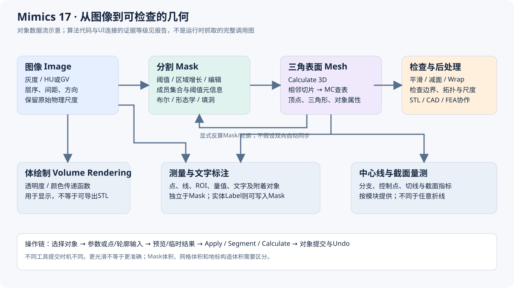
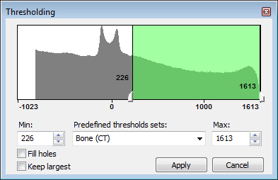
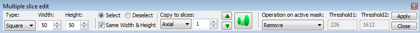
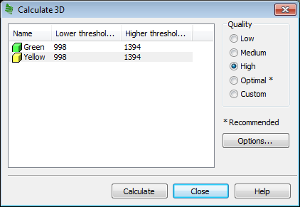

Mimics Research 17.0 标注与三维重建：工具级实现和操作分析
分析日期：2026-11-04。目标：用户提供的本地 Mimics Research 17.0 安装目录及随包帮助。主程序文件版本 17.0.0.435，x64，Visual C++ 2010 系列编译线索。分析采用 reverse-skill-router → R0；三个 GPT‑6.1 Sol xhigh 子代理分别分析分割内核、三维内核、官方帮助，主代理进行补充反编译、交叉核查与汇总。
2026-11-05 后续进展：正文为11月4日静态快照
下文保留2026-11-04的静态分析快照及各章证据日期。 当时的“未确认”需要结合以下后续材料阅读；后续独立实现也不代表原版数值等价或完整验收。
- Smart Expand后续内核深挖已从延迟调用推进到Random Walker、Jacobi预条件共轭梯度（Jacobi-PCG）以及严格的“概率大于70%”结果判定，补充了原报告当时尚未确认的算法链。
- LiveWire后续恢复与高斯缺口补充了强度/梯度归一化及零交叉取边规则；离散高斯的系数生成与截断细节仍未完全恢复，自动预处理保留近似边界。
- 三维插值与体积补偿深挖补充了局部插值分段公式、5×5邻域与粗边采样，以及平滑体积补偿的三次多项式设计；GUI字段映射和逐位数值一致性仍有未确认项。
- 当前Vue实现与验收进度记录后续实现、回归和验收状态；这些更新不改变本报告旧章的证据日期，也不把独立实现冒充为完整原生内核恢复。

先读这几个结论
Mimics 的主链是 图像强度 → Mask 分割 → 表面重建 → 网格处理与测量/导出。标注既可能指组织分割，也可能指文本、测量或实体文字 Label；它们分别修改不同对象。所谓“三维重建”也至少有三种含义：由 Mask 求三角表面、由图像灰度做体绘制、为 FEA/CFD 生成体网格。本包能直接证实前两者的操作区别，第三类常与 3-matic 协作。
本次并非只根据工具名称讲算法：分割部分核查到区间阈值、扫描行区段的区域增长、动态区域增长的队列及在线均值；三维部分核查到相邻切片组成立方体、查表、插值并写三角面的 Marching Cubes 路径，以及平滑、减面、Wrap 等代表函数。测量部分核查到创建端点、加入对象数据库、提交 Undo 事务的调用链。
证据边界必须保留：Mimics.exe 受 Wibu CodeMeter 保护。 主程序多数业务节高熵，主程序静态 IAT 和随机字符串不能完整反映其业务。未运行本软件或附带启动器，也未尝试改变其许可。报告中的操作步骤来自本地 17.0 帮助；外围 DLL/插件算法来自可读代码；不能把“DLL 中存在算法”升级成“已逐个观察到 UI 调用了该算法”。
分析成果采用三个层次：先看本总览建立对象与工作流，再按工具阅读实现模块，最后用帮助工作流模块查菜单、参数、提交时机和原图。所有地址均附模块名；不同 DLL 默认基址相同，不能只看裸 VA。截图、参数例图、旧教程文字与实际本机开放模块之间也做了区分。
证据等级与阅读方式
| 标记/表述 | 代表什么 | 不代表什么 |
|---|---|---|
| 文档 D / H编号 | 提供目录内 CHM 明确描述的功能、操作或约束 | 已在当前机器逐次点击复现；当前许可证一定开放 |
| 二进制 B：导入/导出/字符串 | 模块接口、类名、参数或诊断文本存在 | 算法每条分支已恢复；UI必定走该函数 |
| 二进制 B：反编译/反汇编 | 特定地址的控制流、参数、循环和调用实际可见 | 自动恢复类型全部正确；运行时效果已量化验证 |
| 推断 I / 候选 | 与证据相容的实现解释或数学等价模型 | Mimics源码原样实现 |
| 未确认 | 证据不足、受保护调用边界、版本描述冲突 | 不存在该能力 |
模块编号有独立命名空间：分割实现 A、重建实现 R、测量实现 M；官方工作流另用 S/R/A/C/P/X 等编号。不要仅凭相同数字把两章工具直接配对，以名称为准。
数据对象与修改边界
| 对象 | 主要内容 | 哪些工具修改它 | 关键区别 |
|---|---|---|---|
| Image / Volume | 原始灰度、层序、像素尺度、方向、HU/GV转换信息 | 图像导入、过滤、重采样等 | 窗宽窗位通常是显示映射，不能当作原始灰度 |
| Mask | 体素/像素成员集合，颜色、名称、阈值等元信息 | Threshold、Region Growing、Edit、Morphology、Boolean等 | 阈值属性不是成员集合本身；Clear可清成员而保留阈值 |
| Polyline | 单层或多层有序轮廓 | LiveWire、Calculate Polylines、轮廓编辑 | 轮廓需转为成员集合或参与重建，不能等同完整体积 |
| 3D Object / Part / STL | 顶点、三角形及对象属性 | Calculate 3D、Smooth、Reduce、Wrap、Cut、Split等 | 改网格不会自动证明原Mask同步改变；需显式反算Mask |
| Measurement | 点、线、ROI、对象关联、量值 | Distance、Angle、Diameter、Area、Density等 | 独立于分割；显示小数位不等于实际测量精度 |
| Annotation | 附着对象、文字、引线、样式和可见性 | Add Text Annotations | 注释不会直接改Mask，也不天然写入STL |
| Label | 写入Mask的实体字符形状 | Label | 与Annotation不同，可经重建成为几何文字 |
| Centerline | 分支、控制点、切线、截面量 | Fit/Edit/Grow/Split Centerline及测量 | 不是任意自由手绘折线；相关测量有Analysis模块前提 |
| FE volume mesh | 体单元、材料及求解器格式 | FEA/CFD、3-matic配合 | 表面STL仅是壳；不等于四面体/体网格 |
Mask 的底层并非必然是每个体素一个独立字节。本包 MatImageOperations.dll 的已核查分支使用带成员位的扫描行区段（run-length）结构：连续区间用起止位置与mask位描述。阈值、布尔、编辑和形态学可以沿区段操作；另一些算法为局部遍历建立临时体素访问状态。“整体用RLE”不意味着所有模块只存在RLE一种表示。
物理坐标解释应始终考虑像素间距、切片间距与方向。一般可写作 p = origin + direction × diag(spacing) × index；这是几何解释模型，未宣称已恢复本包完整 DICOM 仿射实现。二维、MPR、三维拾取、测量和STL导出需要统一物理坐标；厚层插值能改善连续外观，不能创造真实采集分辨率。
从用户操作到内部处理
大多数工具可按以下状态理解：选择目标对象 → 输入参数/点/轮廓 → 预览或临时结果 → 应用/计算 → 将动作写入工程 → 更新视图和Undo历史。具体提交时机因工具而异：Threshold 的 Apply、LiveWire 的 Segment、Multiple Slice Edit 的临时mask与Copy/Apply，以及单次点击即执行的 Region Growing 不能混成同一个“确定按钮”。
已核查的分割插件与脚本插件通过 Mimics::InterfaceFactory 请求动作接口，再对工程对象执行；框架提供 MMF::Undo::Manager / Transaction、Mimics::IDocument、NotificationCenter 等导出。由此可确证其具有对象接口、命令动作与撤销事务机制。对于未追踪的工具，是否采取相同的预览隔离、取消回滚及增量刷新实现，仍需单独验证。
可编辑 Mermaid 流程图源码
flowchart LR
I["图像强度与物理尺度"] --> S["阈值 / 增长 / 手工轮廓"]
S --> M["Mask成员集合"]
M --> E["编辑 / 布尔 / 形态学 / 填洞"]
E --> M
M --> C["Calculate 3D"]
C --> T["三角表面网格"]
T --> P["平滑 / 减面 / Wrap"]
P --> X["几何检查与STL等导出"]
T --> B["显式计算Mask或轮廓"]
B --> M
I --> V["Volume Rendering显示"]
I --> A["测量ROI与文字标注"]
T --> A
T --> L["中心线与截面量测"]这是对象数据流图，并非已经逐个动态跟踪的函数调用图。Volume Rendering 的分支来自图像透明度/颜色映射，不会自然产生可导出的三角网格。
主要代码模块如何分工
| 模块 | 本次可见职责 | 依据与边界 |
|---|---|---|
| Mimics.exe | 应用主程序，版本17.0.0.435 | CodeMeter保护，主业务UI事件链没有完整静态恢复 |
| Mimics.Segmentation.plugin | Threshold、Dynamic Region Grow等工具控制、校验与动作组装 | 反编译与RTTI；它不直接导入MatImageOperations，连接到具体内核的部分由工厂/主程序隐藏 |
| MimicsBase.dll | IObject、IMask、IMeasurement、IDocument、InterfaceFactory、Undo扩展 | 129文件分诊库中的导出/依赖及代表函数反编译 |
| MatMedicalFramework.dll | 工程对象、动作、事务、通知 | BeginTransaction/Commit/Rollback等导出；被多个插件导入 |
| MatImageOperations.dll | 阈值、RLE区域增长、布尔、形态学、掩码填洞和编辑算子 | 有代表性代码核查，分割实现章详述 |
| Mat2D.dll / Mat2DSlices.dll | 图像及切片/区段相关结构和操作 | 大量导出；不把每个泛型符号都当成UI功能 |
| MatLiveWire.dll | LiveWire代价图、交互路径与相关分割实现 | 对应帮助与代码证据，见分割章 |
| MatOperationsStlImages.dll | 体素/Mask与STL的转换及重建调度 | 实际导入MatImageOperations、MatStlMarchingCubes、MatStlOperations |
| MatStlMarchingCubes.dll | 相邻图像层到三角面、插值、Wrap等实现 | TwoImagesToStl、阈值参数、插值模式与Wrap代码已核查 |
| MatStlOperations.dll / MatSDK.Triangles.* | 三角网格数据、平滑、减面、修复等 | 算子实现和多模块依赖证据 |
| MatIVRender*.dll | 图像与表面显示相关层 | 文件/导出线索；未据此认定特定GPU ray casting实现 |
| Mimics.Script.plugin | 操作和对象的脚本封装 | Distance创建/移动、Mask GetVolume等入口已反编译 |
| MatCenterline3D.dll | 中心线相关结构与操作 | 导出、被脚本/Base引用；本轮没有恢复全部中心线内核 |
| MatStlMaskOperations.dll | 网格上的scalar/vector mask操作 | 不能仅因名称有Mask，就当作CT分割的形态学内核 |
“导入”是模块链接证据，“动作工厂”是可见动态分派方式；未见的连接在报告里保持推断。ITK、Qt、MFC等库出现也只说明依赖，不等于全部分割都是ITK或全部窗口都是Qt。
工具分组与阅读顺序
| 任务 | 优先读的工具模块 | 输出检查重点 |
|---|---|---|
| 得到组织初始分割 | Threshold / Region Growing / Dynamic Region Growing | 灰度标度、种子、连通性、局部泄漏 |
| 逐片或跨片修边 | Edit Masks / Multiple Slice Edit / Interpolation / LiveWire | 临时mask、起止层、轮廓拓扑和漏层 |
| 修复成员集合 | Boolean / Morphology / Cavity Fill / Smart Expand / Smooth Mask | 是否误接两结构、填掉真实腔隙、丢失薄壁 |
| 生成可加工几何 | Calculate 3D / 质量与插值参数 | 输入分辨率、边界定位、三角数、方向和单位 |
| 优化表面 | Smoothing / Triangle Reduction / Wrap / Cut / Split | 体积偏差、拓扑变化、孔洞与法向 |
| 做量测 | Distance / Angle / Diameter / Ellipse / Area / Density / Surface distance | 量的定义、物理坐标、附着对象、采样范围 |
| 写注释或实体文字 | Annotation / Label | 是否改变Mask、是否需要进入最终几何 |
| 做血管/气道分析 | Centerline及截面测量、肺模块专用工具 | 分支拓扑、端点、截面位置、模块许可 |
版本与文档冲突的处理
- 本报告只把已确认的本包行为归于17.0。文档全文中未找到 Smart Fill 或 Split Mask 名称；实际存在 Cavity Fill、Smart Expand、Region Growing / 3D Separate，以及对3D对象操作的Split。这是本包检查结果，不是对以后版本的否定。
- Multiple Slice Edit 的 Interpolation 修改临时Mask成员；View > Interpolated Images 是图像显示相关功能，两者不同。
- Calculate 3D 的原图、
Quality.htm和3D objects.htm使用 Optimal；独立的STL+ - STL/VRML Parameters对话框说明使用 Maximum。这是不同对话框的预设命名，尚未证实逐项等价，不能合并成一个菜单。帮助明确 Calculate 3D 的 High 仍有 XY matrix reduction，更平滑或更好看不等于最高几何精度。 - 同一 CHM 包含Mimics与3-matic协作教程。Mimics
Tools > Smoothing / Triangle Reduction / Wrap与教程Design / Fix / Remesh的操作不能合并成同一软件菜单。Tools三项有Simulation模块前提，中心线测量有Analysis模块前提。 - 截图中的HU、半径、迭代次数、网格误差是当时示例状态，除非正文或反编译明确其默认初始化，不能标成通用默认值。源帮助本身存在旧菜单和图片沿用，工作流章逐条保留。
如何判断结果是否正确
分割首先回到原始切片检查，而不是只旋转三维外观：检查目标每一层的归属、薄桥、分叉、空腔、局部灰度变化及闭合情况。阈值误分造成的结构错误通常不能靠后续平滑消除。
三维重建后将表面叠回二维切片检查边界，再检查孤立壳、开放边、法向、退化/非流形三角及尺寸尺度。平滑、减面和Wrap是不同操作：平滑移动几何，减面降低离散复杂度，Wrap可能重新包络并改变拓扑。三者即使让模型“更整齐”，也可能改变测量与体积。
测量需明确对象与量的定义：直线距离、曲面路径长度、三点圆直径、截面等效直径互不替代；Mask体积、网格体积、地标凸体体积也互不替代。报表小数格式与底层计算精度不同，源图像分辨率和人工点位误差仍决定可信程度。
本次分析范围与可复现性
范围契约：scope.md。阶段记录：timeline.md。只读分析原始目录，副本、IDB、提取文本和报告保存在本案例；没有修改当前项目业务代码、原始软件或患者数据。
分诊覆盖 Mimics 主安装目录下129个 PE 文件（不含另行排除的附带启动器及递归子目录）：共记录131,917项导出、55,831项导入。这是符号盘点规模，不表示逐一反编译了13万函数。CHM 解包得到562个HTML主题。深度核查聚焦分割、重建及测量事务的代表路径，具体地址与原始反编译文件见各章。
主程序SHA256：faed50f99e74926de007299db0bdf58470213b1ee79654d06ea2b9b1ee6e6004。帮助SHA256：be16fa266f1f1eeb8fe705ced35a7da7c461512650354fe184cd7709af902b59。文件版本来自资源，不能据此单独证明安装包供应链真实性。
工具链：已安装的 IDA Professional 9.3 / Hex-Rays MCP、Python 3.12.7（pefile、Capstone等）、Detect It Easy 3.21，以及子代理使用的 radare2/rabin2。CHM 经系统现有7-Zip 26.01解包，作为文档容器工具记录，不安装新依赖。工具索引和脚本执行限制已按用户独立完成要求在本案例内落实。
最小复现命令（PowerShell；只写案例目录）：
& 'C:\Users\wwulli\Tools\reverse-skill-python\Scripts\python.exe' 'C:\Users\wwulli\Desktop\deepmark\work\mimics-17-analysis\notes\triage.py'
& 'C:\Users\wwulli\Tools\detect-it-easy\diec.exe' 'C:\Users\wwulli\Desktop\mimics\Mimics Research 17.0\Mimics.exe'反编译复核：将模块副本打开到IDA，用报告给出的 模块名!VA 定位；默认DLL ImageBase通常是0x180000000，RVA=VA-ImageBase。原始证据JSON保存反编译地址标记和引用，导入导出TSV有精确符号和IAT/入口地址；ASLR下运行时地址需要重新加实际模块基址。
本轮没有进行实机UI逐工具复现、真实病例效果评估、主程序解保护、中心线全算法恢复、所有专业模块深挖或医学准确性认证。上述未验证部分已逐模块标明，不影响对已取得文档和外围代码证据的使用。
帮助原图：核对实际交互语义
以下为用户提供CHM中的说明图，不是本轮实机操作截图。图中的阈值、尺寸等是示例状态，不是通用默认值。



分割与掩码编辑：Mimics Research 17.0 模块逆向报告
本文针对用户提供的 Mimics Research 17.0 安装包，结合本地官方 CHM 与原生 x64 DLL/插件的只读静态分析。它记录了实际导出、RTTI、反汇编/反编译与界面的可核查关系；没有运行 Mimics 或启动器，没有加载患者项目，没有安装工具、连接目标网络、修改许可或原始二进制。所有地址是对应文件首选基址 0x180000000 下的 VA；运行时若发生 ASLR，应使用 RVA=VA−基址重新定位。
A00 证据等级、数据模型与模块边界
使用以下三类标签，避免把文档说明或通用图像处理知识写成已恢复源码：
- 已确认·代码：反编译正文中存在实际分支、循环、位运算或调用，并有导出/RTTI/调用上下文支持；仍不等同于本机实测。
- 已确认·文档：本包 CHM 明确说明步骤/语义；不能证明本机许可证开放、截图数值是默认，或实现符合某一特定数学算法。
- 强推断 / 未证实：分别表示证据支持但调用链不完整，或尚未恢复关键实现。主程序受保护处不通过猜测填补。
真实分割后端的重要发现是 MatImageOperations.dll。名称相近的 MatStlMaskOperations.dll 主要处理三角网格的 scalar/vector/color mask（例如 MStlMaskOperatorVectorMaskApply、MStlMaskOperatorMorphLocal），不能把它的“mask”直接等同于医学图像分割体素。Mat2DSlices.dll 具有二维轮廓、切片栈、hatch、boolean、split 操作；仅见这些导出，不能认定其 Split 就是用户界面中的 mask 分离。
代码显示两套可并存的数据路径：
- 旧式后端以
RUNLENGTH/RUNLENGTH_LINE保存切片行区段。代表区段为8字节：16位起点、16位终点、32位 mask 位集合；行对象含区段数及区段指针。阈值、布尔、形态学和普通连通域可在此压缩表示上操作。这里的32位 mask 位与形态学临时槽扫描一致，不能外推为整个产品只能创建32个用户 mask。 - 插件中还存在 ITK
ImageStack<unsigned short, ImageStackAirCompressionContainer<...>>与ImageStack<bool, ImageStackBitsetContainer<__int64>>、单 bit 容器等模板。它们证明灰度栈与二值栈有压缩/位集专用实现；不证明每一个工具都采用相同容器。
GUI 与算法之间通常经 Mimics::InterfaceFactory 获取 action 接口，交由 MMF::Undo::ManagerEx::Perform 执行。Threshold/DRG 的具体反编译已看到事务、锁、Perform 和 Commit；其他工具的撤销只按文档通用 Ctrl+Z/Ctrl+Y 描述，不冒称逐项实测。只关闭对话框通常不能视作取消之前已提交的编辑。
二进制证据清单
| 文件 | 规模/导出 | 本次实际用途 |
|---|---|---|
| Mimics.Segmentation.plugin | 6,765,056字节；284导出 | Threshold/DRG界面与 action 调度，SmartExpand/CTBone/ThresholdRegionGrow的类及控件 |
| MatImageOperations.dll | IDA 1846函数；导出见全包索引 | 阈值、RLE、Boolean、Grow、Morphology、Edit、Cavity 与自动孔洞填充 |
| MatLiveWire.dll | 4,263,424字节；444导出 | 最短路径树、梯度/拉普拉斯代价图、轮廓控制点/回溯 |
| Mat2DSlices.dll | 1,333,248字节；2266导出 | 切片轮廓数据结构与布尔/分割接口的范围核验 |
| MatStlMaskOperations.dll | 648,704字节；424导出 | 排除三角网格 mask 与体素 mask 的混淆 |
| Mat2D.dll | 459,264字节；365导出 | 二维轮廓/布尔基础层核验 |
哈希、节熵与导入表见 pe-survey.json，补充库 MatImageOperations 的 SHA256 为 daf1a5af2f1953c0709374cba216641f89d2e471021d2817c2b8e58d0624ce76。插件的 ITK、MimicsBase、MimicsControls、MatMedicalFramework、Qt5/MFC、VC100、OpenMP 导入与上述分层吻合。各库完整导入导出、带文件偏移的字符串、代码交叉引用和 RTTI 保存在 annotation证据目录，完整操作文档证据见 workflows.md。
可编辑 Mermaid 流程图源码
flowchart LR
G[灰度图像和物理尺度] --> U[Threshold / DRG / LiveWire]
M[已有mask] --> E[Edit / Region Growing / Morphology / Boolean]
U --> A[GUI Action接口]
E --> A
A --> T[Undo事务 / Perform / Commit]
T --> R[RUNLENGTH区段和mask位]
T --> I[ITK压缩灰度栈 / 二值位集]
R --> O[更新mask / 切片显示]
I --> O
O --> P[Polyline / Calculate 3D]上图为对象和动作层的架构示意；尚未逐一追通的GUI动作到具体存储后端连接，不视作运行时已验证调用。
A01 Thresholding：全局阈值
用途与输入输出。 由项目灰度/HU区间生成活动 mask；它是按强度选体素，不判断解剖归属。输入为图像与 Min/Max，输出为新建或覆盖的目标 mask，并保存其阈值信息。
操作。 选活动 mask 或 Masks > New；进入 Segmentation > Thresholding；选预设组织或调 Min/Max（数值可双击/微调后 Enter）；三正交视图翻片检查实时着色；Apply 提交。预设值受项目实际灰度范围约束。改变全局阈值会丢失之前针对该 mask 的手工分割编辑，应先保存副本。图中226/1613和教程270 HU等是病例值，不能当通用骨阈值或安装默认。
已确认·代码。 插件 sub_180169990 在 0x1801699D3 调 CWnd::UpdateData；0x180169A7D/0x180169A93 调 ImageFns::GetPixelAsGreyvalue；0x180169AA6 校验下限不大于上限；0x180169AE2 经工厂取得 action，设置目标与上下阈值，0x180169B84 BeginTransaction，必要时先创建新 mask，0x180169D05 Perform，0x180169D35 Commit。这是可撤销的正式提交路径，而实时颜色预览另有 IPreviewThreshold / VIThresholdActivePreview_deprecated 类型，不能把预览等同于已写 mask。
后端 MImageBaseOperatorThreshold<unsigned short>::Operate 位于 MatImageOperations.dll!0x180020A00。0x180020E2A 读取16位灰度，0x180020E40/0x180020E5C 排除 <lower 或 >upper，确认端点包含：lower ≤ I ≤ upper。它沿行把连续命中体素收集为 (start,end,maskbits)，随后 0x180020FD0 调 RUNLENGTH_LINE::MERGE，而非简单把全体图像逐字节写成另一张原尺寸图。
边界与未证实。 Lower=0时代码对无存储灰度段有专门处理；压缩灰度空段不应被误认为永远不属于阈值。该导出内核与插件 action 的最后一跳未直接展开，故“此 GUI 在所有条件都固定使用该旧式导出”只属强推断；插件也内含 ITK BinaryThreshold 路径。HU转换具体偏移/斜率未在本节完整恢复。
证据：提交反编译、阈值内核；帮助：Thresholding1.htm、With the thresholding toolbar.htm。
A02 Advanced Threshold：Keep largest / Fill holes / 预设
操作与参数。 Thresholding 截图可见 Fill holes、Keep largest；预定义组织管理见 Predefined Thresholds。选择区间及后处理后 Apply；这些不是单独重新定义灰度窗口的显示工具。预览和提交仍依A01。
已确认·代码。 CDialogBarThresholdAdvanced RTTI位于插件 0x1806256E0。sub_18016C530 先开启名为 Thresholding 的事务并调用基本阈值；随后记录 keep largest、fill holes、range min/max、predefined set。在 0x18016CA37–0x18016CAC1 根据开关创建并 Perform IKeepLargest action；0x18016CAF5 起经 sub_18015F570 创建填孔 action。说明它们是阈值之后的可组合处理，不是调整同一个比较运算符。
未证实。 “Keep largest”按体素数还是物理体积排序、并列分量如何取舍、连通度选择、填孔是否对所有维度/ROI生效，本次未完整反编相应 action，不能从按钮名硬写。MatImageOperations 的自动孔洞填充另有A14，但尚未直接证实它就是该按钮每次调用的唯一内核。完整 CHM 正文没有独立 advanced threshold说明页；本节高级项存在性的依据为截图与代码两类证据。
A03 Region Growing：已有 mask 连通域提取
用途与操作。 对已有 source mask 点种子，提取包含种子的连通部分到 target。设 Source/Target；Multiple Layer关为单片、开为3D；选6或26连通；决定 Leave Original Mask；在目标内部左键点击即执行，无独立 Apply。Leave Original Mask开为复制，关为移动，后者会移除源体素。可在 Target累加，Source/Target双箭头用于交换。
已确认·代码。 MImageBaseOperatorGrow<unsigned short>::Operate 位于 MatImageOperations.dll!0x18000C9D0；mask生长分支从 0x18000D22B 起，把 source/target编号换为bit，按物理像素尺寸/层距把种子转整数索引，限制边界与单层范围，然后调用 RUNLENGTH::REGION_GROW_PHYSICAL（导出 0x18004A680）。后者以RLE段为单位：找包含种子的段；邻行/邻层查找与当前X区间相接或重叠的段；用可扩容环形队列保存 (z,y,segment index)；设置 targetBits | oldBits & ~sourceBits 后入队，避免重复处理，并累计命中体素数。邻接扩张量受连接设置影响；这与“原 mask 内连通域”相符，未重新对原灰度做同一轮全局阈值。
边界。 错误细桥会使两个解剖部位成为同一个连通域；先 Edit断桥。种子应属于source；种子越界、单层范围不含种子、源目标冲突及临时mask使用有早退路径。6/26是文档确认选项；本次未把所有 EConnectivity枚举数值逐一对应到每一分支。RLE内核和GUI action最后一跳未完整联通，内核机制确认、每种界面设置到内部flag的映射保留为强推断。
证据：Grow分发、RLE连通域；帮助：Region Growing1.htm。
A04 Edit Masks：Draw / Erase 与刷子
用途与操作。 编辑活动mask的当前切片。进入 Edit Masks（Ctrl+D/Ctrl+E/Ctrl+T或工具内D/E/T）；选择 Square/Circle/Lasso/Flood-Fill/LiveWire及 Width/Height，Same Width & Height联动；按住左键绘制/擦除。Alt临时切Draw/Erase，Ctrl+左拖改大小，Shift+左键临时导航。右键 Erase full slice清整片。编辑直接改变mask，不等待全局Apply；Close退出工具。
已确认·代码。 MImageBaseOperatorEdit<unsigned short>::_Edit (MatImageOperations!0x18000A520) 根据坐标标志调用 _ConvertPointListToPixelCoordinates；遇多平面帧有专门分支；必要时申请一bit/体素的已处理标志以免同一操作重复处理。_DrawMaskLine@0x18000A260 的 EDrawType分支中，数值2调用 RUNLENGTH::AddMaskLineLogical，数值0调用 ClearMaskLineLogical；其输入是行起止点和目标mask编号。说明手工填充最终可下降为X向区段增删，而不是网格雕刻。_DrawInPolyPlane@0x18000A6F0、_DrawInPolyPlaneLine@0x18000AD00的导出证明斜平面/帧路径另有实现，不能只按Axial行坐标理解所有编辑视图。
边界与未证实。 Lasso、圆/方刷光栅化的精确取整/边界包含、Flood-Fill的Tolerance与Impatience数学定义未反编。文档说明Tolerance越高越需要锐利边界阻止扩张，Impatience控制扩张速度，不能把它们偷换为DRG的HU偏差。刷子显示区域与物理体素之间存在转换，缩放或斜切视图不应直接拿屏幕像素数当物理尺寸。
证据：_Edit、_DrawMaskLine、完整导出；帮助：Edit Masks.htm。
A05 Local Threshold：编辑区域内重新判阈
用途与操作。 在Edit Masks或Multiple Slice Edit选Threshold，只对刷到/临时选中的区域按灰度区间更新活动mask。三组区间中，中间组继承活动mask原阈值且不可改；自定义区间双击数值，Enter确认。刷到区域内原有但超区间的体素也可被删去，并非只能增加。
内部证据。 MImageBaseOperatorThresholdSettings::SetThresholds、MImageBaseOperatorProcessMaskedAreaSettings::SetThresholds、编辑EDrawType和源图/目标mask设置共同证明后端存在区域处理与阈值参数接口；A01内核证明闭区间强度选择的实现。但本次未恢复从Edit的Threshold模式到具体局部判定的完整分支，因此其“只影响选择区”的语义为文档确认，精确算法/阈值端点是否与A01完全一致仍未证实。
边界。 它不改变全局数据集阈值，不等同于只改Windowing显示。对局部选区之外的原mask行为需按文档理解；不可直接把A01整图重算路径当局部编辑实现。
帮助：Edit Masks.htm、The multiple slice edit interface.htm；代码锚点：MatImageOperations导出。
A06 Multiple Slice Edit：临时mask与批量提交
输入输出与步骤。 输入活动mask，工具建立临时mask。选择Axial/Coronal/Sagittal方向；Select/Deselect涂临时选区；填Number of slices并用上下箭头复制，必要时到目标层继续改；选择Operation on active mask=Add/Remove/local Threshold；Apply才改变活动mask。临时与活动mask交集为第三色。复制数0表示向该方向所有层，非0会跳到最后复制层；右键可Select full slice。
代码证据与推断。 MImageBaseOperatorCopySlice<...>::Operate@0x180008AB0、SetNumSlices@0x180008750、SetIncreasingDirection@0x180008760、SetStartSliceIndex@0x180006C20、SetSliceType@0x180008740提供方向/层数/起点的后端接口；SliceEditMeasureSettings同时有mask list、slice image list、frame与transform设置。故“复制临时选区→在原mask执行某操作”的两阶段数据模型与接口吻合。未对 Operate@0x180008AB0反编，不能声称已证实零层数或临时mask的所有内部生命周期。
提交/撤销与边界。 临时颜色不是已改原mask；Apply是文档明确提交点。Close是否丢弃尚未Apply的选区正文不详，不补造。方向和层数错误可批量影响远多于当前显示层的体素；应逐片检查结果。
帮助：Multiple slice edit.htm、The multiple slice edit interface.htm；锚点：MatImageOperations导出。
A07 Interpolation：Multiple Slice Edit内选区插值
步骤。 在不同层画临时mask/轮廓，选择Copy to slices方向，按插值按钮，查看中间层，再选Add/Remove/local Threshold并Apply。完成当前插值后再处理另一组选区。
已确认与未证实。 文档明确插值作用于临时mask；GetImageSliceOfMaskSliceInterpolated与 EInterpolationMethod导出仅说明后端另有切片采样映射，不能证明此处是线性、距离场、形状匹配或样条插值。Mat2DSlices的Contour/Boolean/Stack接口也不足以唯一归属此工具。本次未恢复其数学插值公式。
易混边界。 View > Interpolated Images仅改善XZ/YZ灰度显示，帮助明确mask不变；它与本模块的分割插值不是同一动作。
帮助：The multiple slice edit interface.htm、Interpolated images.htm。
A08 Dynamic Region Growing：强度条件生长
用途与操作。 可直接从原灰度图生长，不要求先全局Threshold。设Target、Fill Cavities、Multiple Layer、Deviation Min/Max，在内部点种子即开始，Ctrl+第二次点击可加入另一种子。Multiple Layer关为单片、开为完整数据集；最后选中种子的HU/GV会显示。结果mask阈值设为所选体素灰度最小/最大值；已有target体素灰度可参与。没有文档说明的独立Apply预览。
已确认·GUI代码。 插件 sub_180170D80 更新对话框数据，验证种子、坐标系转换后检查ROI bounds（0x180170F12越界早退）；创建 IDynamicRegionGrow action、开启undo事务，按情形复制mask；0x180171167传ROI，0x1801711EF传三维种子，0x1801712FC/0x180171328传两个偏差值，后续Perform。只有生长成功才按Fill Cavities开关创建填孔action；失败时若刚创建目标则有删除清理分支，最终Commit。不同入口的功能通过接口与参数组合，而非一次无条件填洞。
已确认·算法。 MatImageOperations!_DynamicRegionGrow@0x18000DB40为3D整数坐标队列生长：物理坐标按平面像素间距和层距转索引，申请packed 2-bit visited图，初始化种子；枚举−1..1邻域、按连接/单层条件筛选，边界合法且未访问的候选调用predicate；通过者写target并入环形队列，队列满时扩容。失败候选也置已访问标志，故不是每轮无限重新检查所有像素。
predicate sub_180003A60先按当前平面/层范围、层内半径平方和层间距离拒绝候选，再读灰度 I。0x180003EAC拒绝 I≤μ−dmin，末尾要求 I<μ+dmax，即严格开区间 μ−dmin < I < μ+dmax。accepted回调 sub_180003F30通过flag决定是否更新在线均值：μ'=(n·μ+I)/(n+1)，并维护计数及最小/最大灰度。该实现实际支持固定种子参考与动态均值参考模式；本次未恢复GUI中哪个选项在每一入口设置该flag，不把所有模式一概写成每一步都更新均值。这也解释CHM同时用“平均灰度”公式与“相对种子偏差”的表述为何不能仅凭文字推断完整机制。
边界。 低对比组织可通过窄灰度桥泄漏；均值更新模式对增长顺序有潜在依赖，但本次未以病例实测量化。偏差零与严格比较可能导致无增长，不能简单当与A01的闭区间等价。分辨率/层距决定物理范围转换。只有部分路径核查了历史“12-bit”灰度说明，不能把任意输入像素格式硬限制为4095。
证据：DRG提交、队列生长、接纳谓词、均值更新；帮助：Dynamic Region Growing.htm。
A09 Boolean Operations：Union / Intersection / Minus
输入与步骤。 选择Mask A、Mask B、Minus/Intersection/Union及Result，Apply写结果，检查后Close。减法A−B不能交换顺序；Target可新建。它作用于mask集合，不是STL曲面布尔。
已确认·代码。 MImageBaseOperatorBoolean<...>::Operate@0x180005910的op=0/1/2分支分别进入union/intersection/difference helper。三个helper逐RLE段读取32位mask位：
sub_180005FB0：inA || inB则置target bit，否则清target；sub_1800061C0：inA && inB；sub_1800063D0：inA && !inB。
每行最后调用 RUNLENGTH_LINE::FuseAdjacentElements，合并布尔后相邻同类区段。它对同一区段的其他mask位进行保留和定点改写，不是全局清空全部mask。
阈值元数据。 文档和代码均有并集取 min(lowerA,lowerB), max(upperA,upperB)，交集取 max(lowerA,lowerB), min(upperA,upperB)，减法沿用A。交集的代码若下限大于上限会交换数值，因此阈值元数据不能反推实际集合非空；集合布尔由mask bits决定。结果已有thresholded标志也并非一定被强制重置。
证据：Boolean分发、Union、Intersection、Minus；帮助：Boolean Operations.htm。
A10 Erode：形态学腐蚀
操作。 Segmentation > Morphology Operations，选Source、Erode、Target、Number of pixels、8/26-connectivity，必要时Limited to另一个mask，Apply。输出边界缩小的mask，阈值元数据继承源；小细枝可能完全消失。
已确认·代码。 MImageBaseOperatorMorphology<...>::Operate@0x180017050中op=0，source/target编号转换成bit后于 0x180017423调用 RUNLENGTH::BinaryErodeMaskerPhysical@0x180049E10；Number of pixels与限制mask被传入；函数保存原连接设置并在结束恢复，复制阈值元数据。8连接开关映射为内部值8，否则26（0x1800171FB–0x18001720F）。
未证实与限制。 本次未反编 0x180049E10全部核循环，故不声称核一定为球/立方体或完全等价于某个开源ITK结构元素。帮助指出Limited to配合Erode可造成与限制mask的交集效应，不应仅按几何ROI裁剪想象。
证据：形态学分发；帮助：Morphology Operations.htm。
A11 Dilate：形态学膨胀
操作/输出。 同A10，选择Dilate后Apply，增加mask边缘体素；Limited to约束结果范围。Number of pixels为操作尺度；不能把膨胀后几何膨胀量直接认定为所有方向相同的毫米值。
已确认·代码。 同一Operate的op=1于 0x180017389调用 RUNLENGTH::BinaryDilateMaskPhysical@0x18004BD50，该接口另有bit形式 BinaryDilateMaskerPhysical@0x1800497E0，和行段层 RUNLENGTH_LINE::BinaryDilate@0x180041B10/0x1800424A0。这些是图像mask路径，不是 MStlMaskOperatorMorphLocal。
边界。 文档8-connectivity为逐平面邻域但遍历整个数据集；26为3D。层间距大于pixel size×Number of pixels时，文档说明跨层效果不能简单按连续球形膨胀解释。确切内核和非等距处理本次未恢复。
A12 Open / Close：复合形态学
Open操作。 选择Open后设Source/Target、Limited to、像素数、连接度，Apply。用于去除细小突出/细桥时，应检查真实细结构是否也被移除。
Close操作。 选择Close，以同样参数Apply；填合小断口时也可能把相邻结构连接。
已确认·代码。 分发op=2/3分别调用Open/Close。RUNLENGTH::BinaryOpenMaskerPhysical@0x18004BC40明确 clear temp → erode(source,temp) → dilate(temp,target) → clear temp，若有Limited to还与其做intersection。BinaryCloseMaskerPhysical@0x18004BB60明确 clear temp → dilate(source,temp) → erode(temp,target) → clear temp，不是凭通用形态学定义推断。
资源边界。 两个复合操作需临时mask位。Operate 0x1800170BB起扫描32槽并检查保留位，找不到可用编号或编号≥32时于 0x18001711D return0；正常完成才清临时mask、恢复连接/限制设置、复制阈值、视需要Optimise RLE。此失败路径是实际代码证据，不能仅以“内存不足”概括所有失败。
A13 Cavity Fill：指定腔体填充
输入与操作。 输入包围腔体的Source mask，建议先Duplicate；设Target及Multiple Layer，用桶形光标点腔内部即执行。Multiple Layer决定单片/3D。它处理所点腔体，不应与阈值后“自动填所有孔”混为一谈。
已确认·代码。 MImageBaseOperatorGrow::_CavityFill@0x18000E520把物理种子转体素坐标，依单层/方向设置计算有效范围并截至图像边界，然后调用 RUNLENGTH::FILL_CAVITY_MASK_PHYSICAL@0x18004D7E0。进一步的 FILL_CAVITY_PHYSICAL@0x18004C9B0先规范化XYZ上下界、验证种子，调用 RUNLENGTH_LINE::CREATE_SINGLE形成种子行段，再用动态容器传播行段并更新mask位，具 bad_alloc异常与progress接口。不是通过网格封洞后再回体素。
失败边界。 种子不在范围内、首段创建失败会return0；开口腔体可向外围泄漏——帮助要求各方向封闭，可先Edit封口。Single-slice“封闭”不证明整个3D空间封闭；应在设定维度检查。源/目标/bit编号的封装调用关系已确认，所有Flood连接判定未逐条恢复。
证据：_CavityFill、底层Fill；帮助：Cavity Fill.htm。
A14 Fill holes：自动孔洞填充与2D/3D分流
入口。 Threshold高级选项与DRG的Fill Cavities是本包可见入口，但对应action到本导出的唯一映射尚未确认。勿把所有“fill”视作同一个工具。
已确认·代码。 MImageBaseOperatorMaskHoleFilling::Operate@0x18005E090先检查mask指针；X/Y/Z中任一固定slice索引非−1即转 _Operate2D@0x18005D320。3D分支裁定bbox、拒绝空范围，分配packed标志容器，将mask占据/空区编码，枚举边界并传播可达状态，随后回写内部未与外部连通的区段；代表传播helper为 sub_180015420，RLE行段写入可在正文后半核查。已确认它具有“边界连通状态区分+内部回填”的实现形态，未把全部bit状态语义恢复为带类型源码。
边界。 空mask引用、无体积bbox早退；2D分支不能当3D封腔。ROI若截断腔体，可改变所谓“外部”的定义；这点由bbox参与算法强推断，未动态复现。
A15 Cavity Fill from Polylines
操作。 选择Source polyline set与Target mask，执行填充。帮助未写确切提交按钮名；不把其他工具的Apply或双击手势移植过来。
数据流。 文档确认逐条封闭polyline填为mask。它的边界可经过插值，因此比由原mask直接Cavity Fill得到的结果更大。Mat2DSlices.dll的Contour/ContourLayer/Boolean数据结构支持轮廓层存在，但未反编此GUI调用链与光栅化，算法细节未证实。不要把“填轮廓内部”描述成已确认的扫描线奇偶/非零绕数算法。
帮助：Cavity Fill from Polylines.htm；代码接口证据：Mat2DSlices导出。
A16 2D LiveWire：边缘吸附与路径树
输入输出和操作。 在Edit Masks的Type选LiveWire，当前切片沿边界放控制点，轮廓吸附图像边缘，以当前Draw/Erase/Threshold作用于区域。CHM未给2D LiveWire独立闭合提交手势，因此此处不擅自引用3D工具的双击规则。
已确认·算法调用。 MImageOperatorLiveWire2D<unsigned short>::CalculatePathMatrix@MatLiveWire!0x180022080读取最后种子与参数，调用 MImageOperatorEdgeDetection2D::Operate@0x1800073A0，保存 PathMatrix、GradMagnCostImage、LaplacianCostImage。Edge Operate要求输入图非空、梯度混合参数处于[0,1]、复用图region匹配；成功返回E_OK=0，否则1。
_CalculatePathMatrix@0x180007A30实际分配访问状态和累计代价图，种子代价0；用24字节项(double cost,x,y)组成二叉堆，pop当前最小项并标记完成，枚举3×3邻域，对未完成邻点做更低代价松弛，写入反向 (dx,dy) 路径矩阵并push堆。堆helper 0x18001B6D0、0x180013AC0已反编。该证据足以确认Dijkstra式非负累计代价最短路径树，不是仅凭工具名猜测。
具体代价。 反编译 0x180007FE3–0x1800080C9显示，取邻边两端梯度代价均值 g、另一代价图均值 l，吸引参数 a、混合权重 w，增量可整理为：
ΔC = exp(−(1−g)·a) · [(1−w)·l + k·w·g] + ε
其中正交/对角对应代码中的k=0.7071067811865476/1.0，ε=2.220446049250313e−16；以 Cnew=Ccurrent+ΔC松弛，写回前驱偏移。此处g/l是预处理代价图，不能未经恢复就认定g等于原始梯度幅值、或将k改成通用欧氏边长。_InitImage@0x180007560串联多ITK filter并复用代价图；RTTI有ZeroCrossingBasedEdgeDetection，但所有预处理归一化公式尚未恢复。
交互数据流。 UpdateMovablePoints@0x1800241E0、GetPixelPointsBetweenSeeds@0x1800259C0、MLiveWireContour2D保存seed、pixel points、smoothed points、closed flag；鼠标移动可沿已算前驱树回溯，不要求每次移动重新从零计算全图。平滑参数与MatNurbs导入存在，但曲线类型/拟合权重未确证。
边界。 弱边界可能吸向别处；图像region、输入空值、参数范围会失败；增大吸引不是任意精度保证。路径受种子与局部代价约束，不含解剖知识标签。
证据：CalculatePathMatrix、Dijkstra内核、输入检查、代价预处理、路径取点；帮助：Edit Masks.htm。
A17 3D LiveWire：跨方向轮廓约束到mask
操作。 Segmentation > 3D LiveWire，选Target及Automatic contour方向（如Axial）；在另外两正交视图放点并双击闭合，多层重复；检查自动方向turtle map；拖点或加constraint line修正，设Start/Stop，Segment生成mask。可选生成的mask重开工具继续改控制点。
参数。 Gradient magnitude 0%偏暗边缘、100%偏亮；Attraction约−3保留小凹陷、约3排除；Apply parameters to all contours决定改当前/全部轮廓。Ctrl+移动可画直线。截图60%/0不是正文声明的通用默认。
实现等级。 A16确认该包有二维最短路径/种子/轮廓存储后端，适合构成3D工具中每条切片轮廓；但从两方向轮廓到自动方向turtle map、轮廓融合及最终3D mask内核未反编，所以这部分仅文档确认/架构强推断，不能声称3D分割等于对所有体素做一次Dijkstra。线至少与另一条turtle线相交才参与分割，constraint line只修当前层。
A18 Smart Expand
步骤和输入。 用粗略内部Source mask开始：New定义阈值、Clear后在间隔Axial/Sagittal层只画目标内部；进入Smart Expand，选Source/Target、Maximum Expand Distance，Apply，检查后必要时再次Apply，最后可Smooth Mask。源mask不要误画到邻接解剖。
已确认·文档。 向外扩展至图像灰度梯度边界，最大扩张距离限制搜索区且越大越慢。教程10 pixels与画每10层、998/1394阈值均是病例示例。不能把Smart Expand改称Smart Fill。
已确认·二进制。 插件含SmartExpandAction RTTI与ISmartExpand、Model/Form/Tool；sub_18014F750从延迟算法函数取得结果并创建可撤销mask更新 action。控件 spinMaximumExpandDistance，UI信号 _OnMaximumExpandDistanceSpinBoxChanged(int) 与 _OnApply()，错误串明确包括Wrong maximum expand distance、Source mask is empty、Mimics has no mask、Insufficient memory、Try to reduce the expand distance parameter。插件还含该区间 FastMorphologyImageFilter / SingleDirectionMorphologyImageFilter特化。
未证实。 算法通过boost函数对象延迟执行，未展开到完整主循环；不能仅从梯度停止描述认定它是某种特定level set、随机游走、graph cut或形态学重建。最大距离的所有检查范围/默认值也未确认。空mask和内存限制有直接字符串证据，确切错误触发阈值未实测。
证据：SmartExpand更新action、延迟函数封装、控件/失败文本；帮助：Smart Expand.htm、Launch smart expand.htm。
A19 Smooth Mask
操作与作用。 选活动mask，Segmentation > Smooth Mask，点击即应用，检查边界后可重复，再Calculate 3D。帮助说明滤除手工分割离群点/伪影并尽量保留重要边界；未列可调参数对话框。
边界与实现缺口。 这是体素mask平滑，与Tools > Smoothing三角网格后处理不同。当前外围导出和字符串未唯一定位该工具内核；本次不能把它确定为高斯滤波、median、majority、曲率流或某种组合。重复可改变细枝/小洞，应观察结果而非根据“保边”说明推定解剖尺寸恒定。具体撤销实现未逐项反编。
A20 Crop Mask
操作。 选活动mask，打开Crop Mask，指定ROI，检查范围后执行。删除ROI外mask，保留原灰度图；本地帮助未给确切按钮名与ROI各手势，不能补造Apply/OK。
接口与未证实。 脚本插件存在 CropMask、Could not perform CropMask 和 ICropMask@Actions@Segmentation RTTI，证明17.0确有action级接口，非从现代文档引入。具体bbox边界是否包含、斜ROI如何处理、裁剪内核与undo保存形式未恢复。它与Crop Project不同，后者涉及项目图像。
帮助：Crop Mask.htm；二进制锚点：Script插件字符串。
A21 Calculate Mask from 3D/object
操作/数据流。 Segmentation toolbar称Calculate Mask from object，正文称Calculate Mask from 3D。选Source 3D object/STL、Target mask，执行并逐片检查。文档确认按项目各切片取网格轮廓再填成mask，输出为项目采样网格上的体素集合。
实现等级。 Mat2DSlices/Mat2D的轮廓对象、布尔接口与MatStlSlicer类库证明包内具备网格切片基础设施；但本模块未恢复GUI到网格相交/填充的调用链，不能指定三角形与平面求交的退化策略或内部点奇偶判定算法。从mask重建网格再回mask不保证体素完全相同，尤其经历平滑、减面及不同采样尺度后。
A22 Edit Mask in 3D / Separate 与“Split”边界
操作。 进入Edit Mask in 3D，在2D调整ROI，在3D预览用Square/Circle/Lasso做Select/Deselect，必要时Grow保留所点模型、Invert反选、Hide/Show观察，然后Remove删除或Separate移入新mask。选择预览与正式Remove/Separate是两个阶段。ROI只为局部处理/速度，ROI外没显示不代表不存在。
名称边界。 本包完整帮助未检出“Split Mask”名称；实际mask分离路径为Region Growing或这里的Separate。Simulation > Split是把已Cut的3D对象分裂，输入是表面对象，不能当本工具。Mat2DSlices!M2DSliceOperatorSplit等导出不能推翻此对象类型区分。3D选区命中、表面到体素映射与连通提取内核本次未恢复。
A23 Calculate Polylines / Update Polylines / 由3D生成轮廓
操作。 Calculate Polylines中选mask并Calculate，得到高分辨率polyline set；改当前片后Update只更新当前层（Ctrl+U见菜单图）；改全局阈值应重算整个集合。Calculate Polylines from 3D则从3D object/STL按项目切片相交取轮廓。
数据类型与实现边界。 Mat2DSlices有M2DSliceContour、ContourLayer、ComponentContours、SliceStackOperatorBoolean、ScanArea；它们证实切片、轮廓层和区域是独立对象，不等于RLE mask行。帮助说明轮廓与STL+分割轮廓一致，且回填可能含插值。具体轮廓追踪、亚体素边界定位、marching squares或其他算法本次未验证，不借Marching Cubes的名字替代二维轮廓分析。
帮助：Calculate Polylines.htm、Update Polylines.htm、Calculate polylines from 3D.htm；证据：Mat2DSlices导出。
A24 CT Bone Segmentation：实际存在但未完整恢复的专用流程
已确认·二进制。 Mimics.Segmentation.plugin明确含 CT Bone Segmentation UI、CTBone.StateMachine、MaskThresholdPage、BoneSelectionState、Finish Segmentation；控件/信号涉及Seed Threshold、Desired/Undesired seed、Lower/Upper Threshold、Gap Closing Distance、Fill Long Bones、Apply For All与Finish。脚本插件亦含CTBoneSegmentationObject和阈值接口。这证明该供给包有CTBone实现线索，不能因CHM未检出就断言不存在。
可确认的内部层次。 存在状态机→种子/阈值页→算法信息→完成分割；该插件同样含 ConnectedThreshold/ConditionalRegionGrow、ThresholdAndKeepLargestPart以及形态学的ITK特化。函数/源路径锚点如 0x1800A9C20引用CTBone.StateMachine，0x1800D1340引用CTBone\States\BoneSelectionState_AlgorithmInfo.cpp:615，0x1800D34F0引用LowerThreshold/UpperThreshold。这些共存不构成已确认完整算法序列。
未证实。 本地562页CHM没有独立CT Bone操作说明，未实机打开；可用菜单路径、许可模块、参数默认/范围、desired与undesired种子的竞争规则、骨桥闭合/长骨填充公式、Apply For All适用对象、撤销粒度均未确认。故不编造用户逐步流程或把CTBone与简单Thresholding合并。实机UI与标准样本结果可用于补证；本次在已记录的只读静态范围内分析。
A25 Smart Fill、专用器官分割与分析范围
| 名称/范围 | 本地证据 | 本次结论边界 |
|---|---|---|
| Smart Fill | 完整帮助未检出；实际有Smart Expand、Cavity Fill | 不建立虚构独立工具、不套新版本同名实现 |
| Threshold Region Growing | 肺部帮助页及插件ThresholdRegionGrowToolBar、IThresholdRegionGrow、Fill Cavities、In-/Inter-slice Distance控件 | 操作见工作流专业模块；内核未完整恢复，不自动等同普通RG或DRG |
| Airways/Pulmonary | MatAirwaysSegmentation.dll、Mimics.Pulmonary.plugin及帮助 | 原生模块实际存在；未展开专用气道/肺叶完整算法 |
| Coronary/Aorta/CTBone | Segmentation插件中实际类/控件与专用过滤器线索 | 类名/ITK模板不等同完整器官分割算法确认 |
| Heart/Cardiac/Stent | MatCardiac、MatCardiacStent及相关帮助/导出 | 未执行/未完成算法核查 |
| 4D mask morphing | 本地帮助有该工具 | 时序配准、运动模型、形变插值未分析 |
| Label | 帮助为可进入STL的实体文字mask | 与Add Text Annotations不同；交互/几何另见测量标注工作流 |
A26 可复现性、覆盖度与剩余风险
本次得到并落盘了三十余个代表性反编译函数。已真正核查的算法包括：阈值闭区间判定/RLE构建、普通RG的扫描段队列、DRG的2-bit访问状态/队列/强度predicate/可选均值更新、三种Boolean位逻辑、Open/Close实际调用序列、Edit的行段增删、Cavity范围与传播路径、LiveWire的二叉堆最短路径/代价松弛/前驱矩阵。未恢复的工具明确保留为文档确认或接口证据，不用通用算法补齐。
主要限制是主程序受保护、若干GUI action的实现驻留位置尚未连通，以及本次没有执行目标，未检验病例结果/参数默认/线程行为/异常与Undo恢复后的完整数据一致性。这些限制不影响上述函数“包含什么代码”的静态结论，但限制了“某界面在所有输入上必然走某内核”的结论。
复现脚本：pe_survey.py、code_index.py。前者只读PE/导入导出/解名/字符串，后者读取.pdata定位函数并用Capstone记录RIP引用/调用、RTTI COL/vtable；反编译保存在evidence/annotation/{seg,imageops,livewire}-0x....json及.c。所有原样本保持只读，IDA仅对本工作区副本建库，已保存并关闭独立会话。检查记录见 journal.md。
三维重建、表面处理与网格接口逆向报告
RC-R00 结论范围与证据规则
分析对象是本地 Mimics Research 17.0 目录中的 x64 PE DLL。原目录只读；没有运行 Mimics、启动器、计算引擎或未知 DLL，没有安装软件，没有接触许可逻辑。为建立 IDA 数据库，仅复制了四个 DLL 到案件工作区。本文将帮助文档的用户操作与原生二进制的实现分别说明，不把函数名字当作已经验证的完整算法。
证据强度约定：D＝随附 CHM 明文/说明图；B2＝已读关键函数指令或完整反编译及其数据；B1＝PE 导入导出、类型/符号和依赖；I＝据上述材料作出的推断；U＝未验证。D 不代表操作已在本机执行，B2 不代表主程序一定通过该入口调用。Mimics.exe 受保护，本文未把 Calculate 3D 对话框到 DLL 的整条 UI 调用链宣称为已追通。
所有地址均为对应 DLL 的首选 VA，本批 DLL 的首选基址都是 0x180000000；RVA＝VA−基址。它们不能直接当成实际进程中的 ASLR 地址。源码式函数名来自真实 C++ 导出和反编译，并非获得了厂商源代码。
| 证据 | 位置（相对案件根目录） | 内容 |
|---|---|---|
| E-RC01 | evidence/reconstruction/inventory.json | 18 个 DLL 的 SHA-256、架构、基址、导出数量、导入模块 |
| E-RC02 | evidence/reconstruction/<DLL名>.json、*-exports.tsv | 完整导入、节熵、原始/解名导出及 VA/RVA |
| E-RC03 | evidence/reconstruction/decompiled/MC-*.c | Marching Cubes、Wrap、三角形写出全文 |
| E-RC04 | evidence/reconstruction/decompiled/IMG-*.c | 影像/Mask 到 STL 的上层调用与不同分支全文 |
| E-RC05 | evidence/reconstruction/decompiled/OPS-*.c | 平滑、补偿、减面、修复全文 |
| E-RC06 | evidence/reconstruction/decompiled/IO-*.c | STL 多格式读写分派全文 |
| E-RC07 | evidence/reconstruction/disassembly/*.asm | 由原 DLL 字节独立生成的 Capstone 反汇编 |
| E-RC08 | evidence/reconstruction/marching-cubes-table.json | 256 项真实配置表、每项边号和三角形数 |
| E-RC09 | notes/reconstruction/inventory.py、static_evidence.py | 可复现静态提取脚本 |
| E-RC10 | notes/reconstruction/journal.md | 阶段记录、工具限制、验证和未完成项 |
| H-RC | evidence/help/text/Mimics Reference Guide/*.txt | 本机 CHM 提取的对应帮助页；原 HTML/图片在 evidence/help/chm/ |
重点 DLL 导出数：MatStlMarchingCubes 660、MatStlOperations 6905、MatMesh 2144、MatOperationsStlImages 173、MatStlSlicer 5645、MatStl 479。大量导出是容器模板、构造/析构、赋值、同地址别名，不能把数量解释为用户工具数量。MatSDK.Triangles.DataWrappers.dll 没有 PE 导出，也不表示没有功能。
RC-R01 先区分 Mask、3D/Part、STL、体网格和体绘制
Mask 是与项目影像栅格对应的分割标签；3D object/Part 是经重建得到的表面实体；STL 是三角面文件/表面对象语境；FEA volume mesh 才是用于体计算的单元网格。Calculate mask from 3D.txt 明确把表面逐切片取轮廓后填成 Mask；STL STL VRML Parameters.txt 明确 STL/VRML 接口在所选体积周围生成三角网格。它们不是同一种存储对象。
二进制也有相应层次：影像路径使用 RUNLENGTH、IMAGE<unsigned short>；表面路径使用 MStlBase/MStlPoint/MStlTriangle/MStlSurface；工程网格路径使用 MMeshBase 及 tet/element 导入导出操作。注意 MDataMask<MStlPoint,...>、triangle scalar/color mask 是网格属性容器，不能因为名字中有 Mask 就认作分割 Mask。MatStlMaskOperations.dll 的大部分接口处理的正是此类属性掩码。（D+B1，高）
可编辑 Mermaid 流程图源码
flowchart LR
A[影像与空间标定] --> B[分割 Mask / RUNLENGTH]
B --> C[Calculate 3D / 表面重建]
C --> D[三角表面 MStlBase / 3D object]
D --> E[平滑 / 减面 / Wrap / 修复]
E --> F[STL 等表面文件]
D --> G[逐切片截取轮廓并填充]
G --> B
E --> H[Remesher / 3-matic 工程处理]
H --> I[体网格 / FEA-CFD接口]
A --> J[体绘制: 颜色与不透明度映射]这是数据关系图，不意味着所有箭头都已由主程序的同一执行轨迹验证。尤其体绘制没有自动变成可导出的表面，见 RC-R11。
RC-R02 Calculate 3D 与质量/自定义参数
用途、输入、输出。 输入为一个或多个已分割 Mask，以及像素间距、切片位置和计算设置；输出为列在 3D Objects 中的三角表面。Mask 的可见性、表面透明度、轮廓显示和三角边显示是显示设置，并不等同于几何重算。（Calculate 3D.txt、Calculating a 3D.txt、3D objects.txt，D，高）
用户顺序。 在 Masks 页、Segmentation 菜单或工具条点 Calculate 3D；在列表的 Selected 列标记需要的 Mask；选择质量；若用 Custom，进入 Options 修改参数，OK 返回后再点 Calculate。帮助中肝脏示例明确是“Custom→Options→勾 triangle reduction/smoothing→OK→Calculate”。帮助没有给出足够证据证明该对话框具有实时几何预览，因此不能把眼镜图标、显示切换或选中模型视作计算预览。（D，高；实时预览 U）
High 与 Optimal 的重要区别。 Quality.txt 说明：Low/Medium 为缩短时间使用 matrix reduction，会影响尺寸；High 仍在 XY 平面做矩阵缩减，某些情况下视觉上更平滑；Optimal 给出最准确的重建；Custom 才允许自行选择计算参数。推荐项旁的星号表示按计算机推荐，不是几何质量认证。Calculate 3D 原说明图和 3D objects.txt 的质量列表为 Low/Medium/High/Optimal/Custom。另一个独立的 STL+ 参数页列 Low/Medium/High/Maximum/Custom：这是两个对话框的命名，本文不主张 Maximum 与 Optimal 的每个数值参数逐项等价，也没有从 DLL 恢复整张预设常数表。（D，高；预设数值 U）
以下是 Calculate 3D 与 STL+ 等相关参数页的对照解释；Calculate 3D 的本地操作例明确确认 Custom 下的 smoothing / triangle reduction。其余详细项主要来自 STL+ 参数页，不据此宣称这些控件全部同时出现在 Calculate 3D 对话框。
| 参数组 | 相关参数页定义的控制含义 | 精度/失败边界 |
|---|---|---|
| Method：Contour / Grey value interpolation | 帮助称前者在图像平面内插值再向第三维扩展，后者做三维灰度插值 | 帮助推荐医学 CT 用 contour、技术 CT 用 grey；这是本版本帮助建议，不能推出所有医学数据都必须如此 |
| Slices / first-last position | 限定参加重建的切片区间，Reset 恢复全范围 | 截断目标会改变几何范围 |
| XY / Z matrix reduction | 按栅格尺度分组/重采样，减少计算数据 | 帮助指出过度缩减会损失细小结构；grey 分支可能出现人造孔，contour 分支可能看起来平滑但尺寸偏大 |
| Smoothing iterations / factor / compensate shrinkage | 几何平滑次数、局部几何权重和收缩补偿 | 高 factor 时帮助建议少迭代；体积接近不等于每个局部尺寸不变 |
| Triangle reduction mode / tolerance / angle / iterations / buffer | 后续减少表面三角形和控制保留细节 | 与影像矩阵缩减是不同阶段；不能通过加大 tolerance 无损地无限减面 |
| Shell reduction | 帮助建议清除很小的壳层，属于重建后清理语境 | 示例数值 1 是特定教程建议，不是所有项目默认值 |
这些详细语义见 STL STL VRML Parameters.txt 和 Remesh.txt。缩放参数在 STL+ 页被定义为导出时缩放，不应直接套成 Calculate 3D 默认行为。
真实内核数据流。 MatOperationsStlImages.dll!MImageBaseOperatorToStl<unsigned short>::_Operate，VA 0x180002630，实读 14,292 字符反编译：
- 清写出状态并
_FindBoundingBox；只有相应成功状态、范围至少三张切片时进入该路径。此条件是此函数的分支条件，不是全部 Mimics 重建入口的普遍限制。 - 构造
MMarchingCubes，设置 writer、阈值/编码、XY 步长和空间间距；源数据有特定分支使用 2048、32000 等中间编码，不能把这些值说成 HU 临床阈值。 _MakeImage生成第一张工作图；循环中交换两个图像缓冲，制作下一张，并在0x180002B48直接调用MMarchingCubes::TwoImagesToStl。- 向 writer 通知切片进度；有写出错误时记录错误状态、退出。即使循环执行完成，如果三角形计数为零，还会检查
RUNLENGTH::IsMaskEmpty等情况，而非一律成功。
该函数把设置结构 +296 的值 1 映射到 MC 插值 mode 0、值 2 映射到 mode 1；尚未将这组内部枚举与两个 UI 文本完整交叉映射。还存在 MImageBaseOperatorToStlMM<unsigned short>::_Operate（0x1800062D0）与 MUserOperatorSurfaceMeshFromMask::Operate（0x1800135B0）等独立路径，因此不能把旧的两图像函数说成所有 non-manifold/多材料重建唯一算法。（B2，高；主程序 UI 入口 U）
RC-R03 Marching Cubes：已经读到的真实实现
关键函数与证据。 MatStlMarchingCubes.dll!MMarchingCubes::TwoImagesToStl VA 0x180017330、RVA 0x17330、函数体大小 0x613；全文 12,479 字符，另有原字节反汇编。符号原型是两个 IMAGE<unsigned short>*、一个 unsigned long 与六个 float。反编译把两个浮点形参错误显示为 int，本文优先采用真实导出原型和浮点指令，不把反编译类型错误当设计事实。
可编辑 Mermaid 流程图源码
flowchart TD
A[两张USHORT工作切片] --> B[按步长s访问栅格]
B --> C[8角点与阈值T比较]
C --> D[8位配置码 0..255]
D --> E{0或255?}
E -- 是 --> F[无等值面三角形]
E -- 否 --> G[配置表查三角形与12条边号]
G --> H[沿边选跨阈值段并求交点比例]
H --> I[空间坐标内插 / 复用共边数据]
I --> J[MTriangleWriter::WriteTriangle]
J --> K{writer错误状态?}
K -- 有 --> L[中断当前遍历]
K -- 无 --> BA. 采样。 _ReductionSamplingSize 在 0x180017320 直接实现 (N−1)/s+1（整数除法）。TwoImagesToStl 对图像两个维度采用同样公式。SetThresholdParameters 在 0x180017260 将阈值放到对象 +8、步长放到 +16，把物理间距乘以步长缓存于 +28/+32；还依据对象 +44 的标志翻转一个方向。SetMarchingCubesInterpolationMethod（0x180017240）写对象 +52。这些小 setter 给较大函数中的字段提供了锚点。（B2，高）
B. 阈值编码与配置复用。 遍历到相邻 cube 时，代码用 (旧码 >> 1) & 0x55 保留共享侧角点，再根据四个新的 unsigned-short 样本是否 >=T 设置 2/8/0x20/0x80 位；0 和 255 跳过产面。共边插值结果也在相邻格间复制复用。由此可确证是“阈值比较→8位 case→查表→三角形写出”，并非仅依据 DLL 文件名猜测。
C. 配置表。 原 DLL RVA 0x142A20 的 CubeConfigFull::m_tabel 为 256 项，步长 19 字节：首字节为三角形数，随后是每三角形三条边的 1-based 编号。真实表解析后的分布为：0 三角形 2 项、1 三角形 16 项、2 三角形 50 项、3 三角形 80 项、4 三角形 76 项、5 三角形 32 项；最大为 5。case 0、255 都为 0。sub_180002310（0x180002310）按 19*case 定位表，边号减 1 后调用坐标转换，按反向顶点索引写三个点，再调用 writer 虚函数。表和函数彼此印证。（B2，高）
D. 内插确实存在两个分支。 sub_1800011F0 按边 0..11 分派到 XY/Z 方向求交函数。XY 函数 sub_180002400、sub_1800025C0 会读取缩减边上原始采样序列，寻找与起点内外方向一致的跨阈值段；若存在多段，保留该方向上灰度变化最大的段，再进入通用内插。它不是简单地只拿缩减后两个端点做平均。
通用函数 sub_1800013C0 在内部 mode=0 时可还原为：
u = p0 + (T−v0)*(p1−p0)/(v1−v0)，随后限制到 [0,1]。
mode=1 时会调用 sub_180002880 获取局部平面邻域的统计上下界，按相对边界距离的 0.1 判断修改比例；局部范围小于约 1.1920929e−7 时返回 0.5。该通用函数有 Hex-Rays “local variable allocation failed”警告，因此只把用指令复核清楚的分支/常数及外层数据流列为确证，不把它的整个伪 C 直接当可编译源代码。mode=0 的阈值线性分支在独立 Capstone 反汇编中可直接复核。（B2；复杂 mode=1 的完整数学模型仍部分 U）
还有一个容易遗漏的实现细节：方向求交函数返回前再次用 DLL 中的 float 常数限制到约 0.001..0.999（RVA 0x1C7700/0x1C7704 实读值为 0.001000000047... 和 0.999000012875...）。所以内部交点不会严格落在边端点。这是该路径的数值实现特征，不能由普通教科书 MC 公式代替。（B2，高）
E. 坐标、结果与失败。 sub_180001610 对选中边执行 (1−u)*坐标0+u*坐标1，同时考虑两个切片的端点坐标。函数末尾返回的是 writer 的三角形计数，不是完整成功布尔值；中途 writer 失败也可以带着已写入的计数返回，上层另查错误状态。源码级公式中的 s=0、非法图像大小等在此局部函数内没有全面防御；本次未运行异常输入，不据此主张 UI 可触发崩溃或构成漏洞。扫描分辨率、切片间距、阈值、缩减和边界裁剪的误差会进入表面，后续变漂亮并不消除这些误差。（前半 B2；误差传递 I）
RC-R04 Smoothing：邻域位移、体积补偿和一致性恢复
用户流程与参数。 Smoothing.txt 写明 Tools 菜单或对象列表 context action 可打开此工具，输入为 3D object/STL，输出回到 3D Objects 列表。选择对象、Iterations、Smooth factor、Compensate shrinkage、Keep originals 后执行。Keep originals 控制保留来源。帮助在此项沿用了“cut objects”措辞，不能据此解释为发生切割。Smoothing1.txt 另写 Design 菜单，属于帮助中另一上下文；本文不把它混成当前 Mimics 主窗口的第二个必然入口。文档没有足够证据确认实时几何预览及特定提交按钮名称。（D，高；预览/精确按钮 U）
已读内核链。 MatStlOperations.dll!MStlOperatorSmooth::Operate（0x180414040）按 MStlItem::GetType 分派到整 STL、surface、triangle list、feature 和 marked triangles 容器。整实体分支 MStlBaseOperatorSmooth<MStlBaseContainer>::Operate（0x1804024B0）做以下事情：
- 验证输入和 Smooth factor 在
0..1。factor=0 或 iteration=0 可直接作为成功的无操作返回。 - 建邻接/待处理点及边信息；若启用补偿，先记录
_Volume。 - 每轮执行
_DoGaussianStep；启用补偿时每轮再执行补偿步骤，并允许用户取消。 - 按相应标志清除 free points、重排点表、合并重复点并重新计算 normals，恢复 STL 一致性；取消时返回失败状态。
_DoGaussianStep（0x180402DB0）真正计算邻域 Laplacian，按算法/边界/特征参数选择分支。最直接的一阶均匀邻域函数 _CalculateNbhdLaplacian1st（0x180405180）实读可还原为：
L(p) = Σ(q−p)/邻点数，邻点数为零时失败；随后按平滑系数生成位移并更新点坐标。部分路径先缓存所有位移再应用，部分路径直接写点，不能概括成只有一种更新次序。内部 MStlPoint 坐标写入存在整数化，空间量化也是误差来源。（B2，高）
补偿不是一句“恢复原体积”就结束。 _CalculateMu（0x180404200）会构造并评价多项式候选值，筛选 [-1,0] 区间内的候选，使预测体积与记录体积的差更小，并有接近 −0.95 的限制分支。这支实现说明它是基于几何/体积计算补偿系数，而非简单把包围盒统一放大。帮助只承诺平滑前后体积相似；不能提升为局部边界、孔径或薄壁厚度逐点守恒。（B2+D，高）
库内还存在实读的 MStlOperatorSmoothTaubin<...>::Operate（0x180088FF0），按迭代交替应用两个系数，并有 SetTaubinSmoothingParameters(double,double) 导出。这能证明库具有 Taubin 路径，不能证明 Mimics 的普通 Smoothing 对话框固定调用 Taubin，也不能把它和上述体积补偿代码简单等同。（B2/B1，高；UI 算法选择 U）
RC-R05 Triangle Reduction：三种界面模式与实际边折叠
用途与操作。 Triangle Reduction.txt：对 3D/STL 减面，结果回到 3D Objects；Tools 或对象 action 打开；选 Point / Edge / Advanced Edge、Tolerance、Edge Angle、Iterations 后执行。Tolerance 在帮助中定义为相关三角形加入同一近似平面的最大偏离（mm），Edge Angle 决定应保留的边；不要直接把 Tolerance 宣称为整模型严格的 Hausdorff 距离保证。（D，高）
STL STL VRML Parameters.txt 进一步说明 Point 删除点，Edge 删除边；Advanced Edge 往往噪声更少、模型更小，Point/Edge 对技术零件可得较均匀网格。帮助称多次迭代用于更大平面，约 15 次后趋稳，并建议很嘈杂对象先平滑。这里的 15 是帮助的经验描述，不是本次从代码发现的硬编码上限。
实读路径。 MStlOperatorReduce::Operate（MatStlOperations VA 0x1804B6150）把输入容器/动态参数封装后经 OperatorRegister::Create("MStlBaseOperatorReduceEx",...) 创建实际操作；不能仅从这个 wrapper 得到全算法。继续读取：
MStlBaseOperatorReduceEx<MStlBaseContainer>::Operate（0x180499140）→ _DoPreprocessing（0x18049D130）→ _DoLocalEdgesCollapses（0x180499AD0）→ _ProcessPoint/可选 _DoBorderEdgesCollapses。
预处理可建立 MDataMask<MStlPoint,MStlBaseOperatorReduceExBase::Quadric*>，局部折叠循环逐点处理、迭代和检查取消。这里能确证存在用 Quadric 结构辅助的边折叠实现分支。但目前未完整恢复每种 UI Reducing mode 到内部类/枚举的映射，也未完成 Quadric 权重矩阵、误差函数、所有拓扑/翻转检查的逐条证明，因此不把全工具武断命名为某个标准 QEM 论文算法。（B2，高；完整目标函数与模式映射 U）
输入有噪声、边界非流形、保留角度过低或 tolerance 过大时，减面可能抹掉薄结构/锐边；这些是文档约束和几何推断。减面减少三角形数量，重网格改善单元形状，是两个不同目标；三角形少并不自动适合体网格。（D+I）
RC-R06 Wrap：影像偏移链与薄壁保护
用户界面。 Wrap.txt 定义为为所选实体创建包裹表面，常用于去小夹杂、封小孔和获得 FEA 包络。Tools 或对象 action 打开；选对象后设置 Smallest Detail（新表面的三角形尺度）、Closing Distance（要包掉的间隙尺度）、Dilate result、Protect thin walls、Keep originals。选薄壁保护会保留薄结构，但模型可能比原来略厚，影响程度随 smallest detail 而变。帮助没有给出“任意大孔均能正确封闭”的保证，也没有证明这种封闭对应原始解剖边界。（D，高）
真正的执行链。 MatStlMarchingCubes!MStlBaseOperatorShrinkWrap::_Operate（0x1800CEA10）不是单纯沿法线拉一层三角面，而是：
MParametersAdvanced::Initialize → CreateThickness → 若干可选中间处理 → InternalOffset → 可选 RestoreSharpFeatures → RestoreColors / 可选 RestoreSurfaces → 清理/返回。
CreateThickness（0x1800D1B00）实际构造 MStlBaseOperatorOffsetUsingImagesNew 并调用 Operate，把外偏移、解析分辨率、图像类型等传入。InternalOffset（0x1800D1F00）完成回偏移相关处理。两个主要阶段失败会阻止后续依赖阶段，因此它具有明确的状态/取消传播，不能仅以“函数名叫Wrap”说明成功。（B2，高）
分辨率与内存不是无关参数。 MParametersAdvanced::Initialize（0x1800CE4D0）先复制 0x90 字节基础参数；一个分支根据实体扩展包围盒体积、预算和 8 字节/体素因子取三次方根估计栅格尺度，再取整；另一个分支按内部单位换算用户尺度。其内存预算分支对一个参数使用至少 20×1048576 的下限。这里只确证内核可按内存/空间尺寸派生栅格解析度，不把原始字段强行映射为本版GUI中不存在的控件。（B2，高）
偏移公式的可复核部分。 令 U=StdBase::MInternalUnits::Get()；r=GetResolution_IE()，g=GetGapSize_IE()，t=GetThicknessCreationUser_IE()；getter 和指令分别锚定 r=对象+0x110、g=U*(+0x48)、t=U*(+0x60)。外偏移函数 GetOffsetDistanceOutside_IE（0x1800CFBE0）先取：
b=ceil(r*0.5*1.42)，d=0.5*1.05*g；再组合 max(d,b,t')，其中内核 +88 标志打开时 t'=max(t,b)，否则 t'=t。内偏移 GetOffsetDistanceInside_IE（0x1800CF950）为 t'−外偏移，相等则返回 0。由符号和薄壁相关 getter 可把 +88 解释为薄壁保护相关标志；从受保护主程序到该字段的 UI 连线仍未追通。（公式 B2；UI 字段映射 I）
GetThicknessOfWallsThatCanDissapear_IE（0x1800CFA00）在该标志打开时返回 0；关闭时返回 max(0,r−2*(外偏移+内偏移))。GetMustRestoreSharpFeatures（0x1800CFB30）还要求内部开关开启、内外偏移之和绝对值小于 1，才允许锐特征恢复。可见“恢复锐边”是条件路径，不是 Wrap 后无条件完全还原。（B2，高）
不要把帮助中 Smallest Detail 字段直接说成上述 r 的一对一数值复制：算法还存在内部单位、内存驱动尺度、保护薄壁及投影容差。精确 GUI 值到最终网格误差的换算需要运行时验证，本次没有做。
RC-R07 修补、法线、拼接与补洞：能力与可见工具的边界
MatStlOperations!MStlBaseOperatorFixer::Operate（0x180445F10）已完整读取，按参数标志依次执行：Normals→Stitch→第一次 NoiseShellRemoval→HoleFill→Unify→SharpTriangles→第二次 NoiseShellRemoval。它是一个可组合的修复管线，顺序有代码依据；不表示本版 Mimics 一定有名称相同、全部开关可见的“自动修复向导”。（B2，高；UI U）
MStlBaseOperatorFixNormals::Operate（0x18044CEA0）存在按位选择的 edge-based、shell raycast、supershell raycast、shell positive-volume 检查，以及 STL positive-volume 检查；它遍历三角形，统计被标记面，并依据另一个标志决定是否真正 MStlTriangle::Invert，最后更新成员。这说明“检测/统计”与“应用反转”在内核是可以区分的。（B2，高）
补洞方面，MatStlMarchingCubes 导出 MStlOperatorFillHoleDiffusion、MStlOperatorFillHoleReconstruction、MStlBaseOperatorGridHolefiller；其中重建补洞的 vtable 明确包含 MInterpolatedSurfaceTmpl<RBF_Cubic>、MMarchingCubesGrid::IEvaluationFunction，并导出 _Interpolate、Evaluate、_Triangulate、_TrimExtrapolatedSurface 等入口。可确证库中同时存在扩散和隐式曲面/RBF 重建补洞路线；本次未将它们全部反编译到可复现数学求解器，因此不主张任何孔洞形状都可成功修复。（B1，高；完整补洞算法 U）
用户可据文档采取的顺序。 Remesh.txt 的 3-matic/Remesher 工程协议建议先处理薄壁/夹杂、必要时平滑后 Reduce、查看单元质量、Auto Remesh，再检查自交；自交可标记相交三角形、删去适当面并填洞，随后再次检查质量。此顺序属于重网格环境。不能把这些 Fix toolbar 功能直接写成 Mimics 主程序 Tools 菜单的固有项。（D，高）
几何误差包括法线反转改变内外定义、拼接阈值把邻近但不同的面粘在一起、补洞创建推断表面、删除壳层丢失小结构；后两者会改变拓扑。检查“无孔、无自交”与判断结构符合原影像，是不同验证问题。（I）
RC-R08 Calculate Mask from 3D / Part→Mask
输入输出与操作。 Calculate mask from 3D.txt 明确：在对话框指定 source 3D object/STL 和 target mask；算法在项目每张切片上取该表面的轮廓，再填充轮廓得到 Mask。这不是把表面顶点逐点贴到图像，也不是无损逆转 Calculate 3D。（D，高）
二进制侧 MatStlSlicer.dll 有真实导出：MSliceMediumZ::CalculateIntersection（0x1800CC880）、MStlOperatorSlicerZ::Operate 的 compact STL 到 LAYER/CONTOUR_LAYER/VECTOR_LAYER 重载（例如 0x1800CD700/0x1800CD710/0x1800CD720），以及 arbitrary-plane slicer、_SliceFrom、_PassContourToTarget 等。符号结构吻合“网格与切片平面求交→组轮廓→目标层”的设计；本次未把 Mimics 的 target Mask 填充调用直接追到这些 slicer 重载，因此这里只给 B1 支撑，不冒充完整调用链。（B1+与D一致，中高）
逆变换受目标影像分辨率限制，表面移动/缩放后也必须使用正确项目空间。平滑/Wrap 生成的表面再体素化会把这些几何修改带回 Mask；薄壁可能只剩不到一个体素，开放/自交表面的轮廓填充可能有歧义。这些是可解释的几何限制，不是本次对目标软件实际失败测试的结果。（I）
RC-R09 STL+ 导出与真实三角形写出
用户顺序。 STL procedures.txt：来源可为 .3dd、Mask 或 3D Objects；在 STL+ 对话框选择对应 tab，选择来源并 Add 到输出区，必要时重命名输出，再选格式、Next 进入参数页，最后 Finish 开始生成。可以多选 Mask 或多选 3D，帮助明确不能在同一批中混合添加 Mask 和 3D。.3dd 中间文件不是所有导出必经步骤。STL.txt 列出 Binary STL、ASCII STL、DXF、VRML 2.0、PLY。（D，高）
STL+ 的 Quality 页面按其自身文字使用 Low/Medium/High/Maximum/Custom；与 Calculate 3D 的 Optimal 是不同对话框，未证实每档配置逐项对应。导出参数中 Scaling=0.5 会生成半尺寸示例，导出后的尺寸验证必须考虑缩放。影像矩阵缩减、平滑和减面也可能在从 Mask 导出时参与计算，导出绝非只有改文件后缀。
文件分派层。 MatStl.dll!MStlFileIOMulti::Save（0x180016000）检查是否有 STL/assembly、文件指针和写模式，再 SaveHeader，按 mode 0/1/2/3 分派 STL、Materialise compression mode1、mode2、Materialise STL；未知模式错误、无对象/无文件/非写模式也各有状态。SaveStlFormat（0x180016A80）最终调用 MatSDK::Triangles::Data::MStlBaseFileUtilities::Write；特定标志还先写内存、Compress 后写外层流。内部压缩/项目序列化模式不应全部等同于标准交换用 STL。（B2，高）
直接三角 writer。 另一路 MatStlMarchingCubes!MTriangleWriterToFile::WriteTriangle（0x18006A0B0）已读全文：
- 已有错误状态立即返回；由三个顶点差向量叉积计算法线并归一化，零长度时计入退化三角形计数并拒写。
- ASCII 分支实际输出
facet normal、outer loop、三个vertex、endloop/endfacet；不是从字符串列表推测格式。 - binary 分支
fwrite(Buffer,4,12)写 12 个 float（法线3＋顶点9），再写 2 字节 attribute，合计 50 字节/三角形。可选单位栅格量化在写顶点前执行。 - 每次写失败置错误状态；成功才增加计数。
Close（0x180069F10）在 ASCII 追加endsolid，在 binary seek 回计数位置写入最终 triangle count，再关闭流并返回状态。
这证实内核能从流式产面直接写标准 STL 记录。它与 MTriangleWriterToStlDirectly::WriteTriangle（0x18006AA90，写内存实体）是两类 writer，因此“重建出三角形”和“文件成功保存”应分别检查。（B2，高）
失败边界包括退化面、写入中断、无输出权限/空间不足、只计算出部分三角形。帮助 STL1.txt 也列出输出目录权限、隐藏扩展名和磁盘空间排查。STL 记录本身不包含原 CT 灰度体、分割历史或一般工程材料；保存 STL 不是保存完整 Mimics 项目。（前半D+B2；格式语义为标准结构与本次记录布局一致的推论）
RC-R10 Non-Manifold、Remesh 与 3-matic/MatMesh 边界
Non-Manifold 的输入与含义。 Calculate Non Manifold.txt 说明用于两个或多个体共享界面，例如相接组织/材料。先完成各 Mask 分割，在 Assembly 列添加；第一个加入的 Mask 保持，后加入与之相交的 Mask 会被扣除交叠区。随后 FEA/CFD→Create Non-Manifold，设置 Pre-smoothing、Matrix reduction、Post-smoothing。Pre 在 Mask 层处理孤立体素/薄区，Post 尽量保细节；帮助的 [1,1] 是常见 matrix reduction 建议，非不变默认。（D，高）
MatOperationsStlImages!MUserOperatorSurfaceMeshFromMask::Operate（0x1800135B0）实读可见 RUNLENGTH 尺寸/切片距离、可选 _ReduceZDistances、空间生成、取消清理和最终输出 STL；其内部大量模板/未命名过程尚未全解释。加上 MImageBaseOperatorToStlMM，足以说明多 Mask/共享面路径不能粗暴套成“对每个 Mask 分别跑旧 MC 再叠起来”，但尚不能把该特定函数认定为 UI 的 Create Non-Manifold 唯一入口。（B2；后半 U）
Remesh 的用户顺序与环境。 Remesh.txt：选一个或多个 3D/STL，OK 后自动启动 remesher；Remeshing the 3D Object.txt 明说随后进入 3-matic interface。3-matic.txt 明确其菜单会选对象、OK 后启动 3-matic 并加载对象。General preferences.txt 还有关联的 3-matic 版本/路径设置。因此教程把某些环境称作“Mimics Remesher”，不代表所有工程操作在 Mimics.exe 内部完成。（D，高）
帮助的典型工程顺序是：检查闭合/薄壁→必要 Wrap→Smooth→Reduce→inspection 场景看边长与单元形状→Auto Remesh→quality-preserving reduction→自交与局部修复→volume mesh→质量验证。Auto remesh.txt 教程用 Height/Base (N)、quality threshold 0.4、geometry error 0.2、3 iterations、关闭 edge-length control；Quality preserving triangle.txt 的示例用 threshold 0.4、3次、max geometry error 0.3 mm、max edge length 5 mm。这些是特定教程参数，不能推广为所有人体模型的合格标准。
Creating a volume mesh.txt 的例子在重网格界面用 Init and Refine、控制最大边长，并明确把 mesh 从 3-matic 复制回 Mimics。MatMesh.dll 中真实导出也支持工程网格层：MMeshGeneralImportExportOperator::Export（0x1800CEBC0）、Abaqus/Ansys/Fluent/Patran 等导出类、MMeshOperatorCreateFromMask、表面提取与 tet 单元相关接口。这些为架构能力证据，不是本次已经反编译验证所有体网格生成算法，更不能由 DLL 同时存在就推断本机每个 UI 功能都可用。（B1，中高）
RC-R11 Volume rendering 是显示管线，不是重建/导出
Volume rendering.txt 明确：不必分割即可把 2D 数据快速显示成体绘制；依灰度/HU 控制不透明度；它是纯可视化工具，不能用于导出。用户在 Volume rendering 页的直方图上拖动 opacity 控制点，左键在线上添点、右键删点；颜色图控制点可改色，控制点间插色；可选/保存 CT 的 bone/soft-tissue 预设。（D，高）
输入是灰度体和颜色/不透明度函数，输出是显示结果。与 RC-R02/03 的三角形 writer 链不同，调整 opacity 并未生成 MStlBase。本次未反编译 GPU 光线投射或纹理采样 shader，因此不把具体 GPU 算法名称、采样步长、early termination 等行业常识当成本版本实现确证。（U，明确保留）
RC-R12 RP slicing 与表面切片输出
RP Slice STL to CLI SLI SLC.txt 说明另一种输出是面向 RP 系统的 CLI/SLI/SLC/IGES 向量/轮廓，可能包含内填 hatchings。可设置 first/last slice、ascending/descending、标签和 cubic/linear inter-slice interpolation。帮助称 linear 默认更快，小间距常可用；切片间距达到约 2 mm 或更大时建议试 cubic 以更平滑。这是 RP slice 页的建议，不能把其 cubic 选项搬成 Calculate 3D 的 MC 插值 mode 1 的同义词。（D，高）
MatStlSlicer.dll 的 source/medium/target 模板、Z 切片与任意平面重载，以及创建 slice stack、CLI/SLI/SLC 等文件/容器类型吻合此层职责。这里只提取导入导出，没有完整逆向全部 RP 格式和制造补偿路径；实际机器适配、支撑、扫描策略、误差预算未验证。（B1，中；后半 U）
RC-R13 精度与置信度汇总
| 工具/结论 | 文档操作 | 二进制实现 | 尚未证明的部分 |
|---|---|---|---|
| Calculate 3D 与 High/Optimal | D，明确 | B2，影像工作缓冲到 MC 调用 | 受保护主程序 UI 完整调用栈、预设常数表 |
| MC 双切片、case表、线性分支、写出 | — | B2，函数、指令、原表三方一致 | 复杂局部修正分支的完整数学重建/运行验证 |
| Smoothing | D，参数明确 | B2，邻域平均Laplacian、补偿与一致性恢复 | 普通 UI 具体算法枚举、是否调用Taubin |
| Triangle Reduction | D，三模式明确 | B2，ReduceEx分派、预处理、局部边折叠/Quadric结构 | 三模式逐项映射、完整误差度量与拓扑保证 |
| Wrap | D，作用和参数明确 | B2，影像偏移链、尺度/偏移/保护分支 | GUI参数到最终内核字段全链、实际误差曲线 |
| 修复/补洞 | D，Remesher协议 | B2修复顺序/法线；B1补洞家族 | 所有可见UI入口、RBF/扩散完整求解过程 |
| 3D→Mask | D，逐切片轮廓填充 | B1，匹配的slicer类型/入口 | Mimics填充调用与slicer的完整连线 |
| STL导出 | D，来源/步骤/格式 | B2，文件分派和50字节记录/ASCII/错误状态 | 受保护导出向导到这些writer的全链 |
| Non-Manifold/体网格 | D，Assembly与工程流程 | B2部分Mask生成；B1 MatMesh接口 | 共享面/四面体求解器细节 |
| 体绘制/RP切片 | D，边界明确 | B1相关模块能力 | GPU内核/全部RP格式与机型算法 |
本报告没有“实机操作已成功”的结论。可复现的是样本哈希、PE 结构、导入导出、关键函数/指令和配置表解析；临床/工程尺寸误差、性能和所有失败表现均未做运行测量。最关键的使用原则来自本版帮助本身：看起来更光滑不等于尺寸更准确，High 不等于 Optimal；表面质量、单元质量和影像真实性需要分别验证。
测量、文字标注与对象事务
分析对象为本地 Mimics Research 17.0.0.435。这里的“标注”分为两种数据：分割 Mask 决定组织成员关系；Measurement / Annotation 保存几何量或文字。两者不应混为同一标签层。本章操作依据随包帮助，代码依据 Mimics.Script.plugin 与 MimicsBase.dll 的静态反编译；未实际运行软件界面。
证据分级：D＝本地帮助直接描述；B＝本地二进制符号或反编译直接支持，分别说明是哪一种；I＝可实现同类功能的合理算法解释，尚未证实是本版本的精确实现。下列数学式如标 I，不表示已经恢复原始源代码。
M01 文字标注 Add Text Annotations
输入与输出。 输入为二维图像或三维对象上的附着位置、文字及样式；输出为独立 Annotation 对象，包含 Name、Visible、Object、Text。它不会直接增加或删除 Mask 像素。[D：Add Text Annotations、Annotation]
用户流程。 激活标注工具 → 在二维/三维结构上左键点选 → Annotation Properties 弹窗填写 Text，设置 Arrow Style、Text Rotation、Text alignment → 完成后显示引线和文字。长文字在视图中显示省略号，悬停显示全文，双击可编辑。右键可 Delete、Hide、Properties、Annotation List；项目列表还有 Duplicate 和 Locate，Locate 会把视图定位到标注处。
实现解释。 工具至少需要保留“附着对象引用＋空间位置＋文本＋显示样式”，再由视图将空间锚点投影到屏幕、绘制引线和标签。[I] 帮助直接证明 Object 关联存在，但没有证明内部存储的是世界坐标、三角形重心坐标还是其他锚定方式；对象变形或被删除时的自动跟随规则也未确认。不能据此写成“文字烘焙进 CT 像素”。
边界。 隐藏文字与删除文字是不同操作；调整颜色或文字不会改变组织分割。截图上能见到文字不等于 STL 导出包含文字。来源：文字标注、标注列表。
M02 直线距离 Measure Distance
操作。 Measurements > Measure Distance 或测量工具栏 → 第一次左键设端点 → 移动鼠标显示长度预览 → 第二次左键固定另一个端点；拖动任一端点细调。结果单位 mm；右键可删除、隐藏、进入 Measurements 列表。[D]
数据与数学。 两个空间点 p、q 定义距离，等价实现为 d = sqrt((px-qx)^2+(py-qy)^2+(pz-qz)^2)。[I：公式；D：两点结构、mm] 三维模型上点选还涉及命中对象引用；二维视图中应先把显示坐标转换为图像/物理坐标，不能直接以屏幕像素距离作为 mm。实际拾取和欧氏距离求值函数在本次未恢复。
真正恢复的创建路径。 Mimics.Script.plugin!sub_18004A9A0 把 CreateDistanceMeasurement 绑定到 sub_180049440。后者检查工程已加载，开启名为 Create Distance 3D 的 Undo transaction，创建测量包装对象，分别以索引 0 和 1 调用 sub_18003D220 加入端点，把对象加入数据库后 Commit。[B：反编译]
sub_18003D220 从 InterfaceFactory 获得 Mimics::Measurements::Actions::IAddPoint3D，校验 Measurement 对象，解析可选 IStl，把三个 double 坐标转换为 float，设置点坐标、点序号和关联对象，然后执行 Action。该证据确证这一脚本入口的坐标转换与对象操作，不代表整条软件计算链都只用 float。
编辑路径。 sub_18003D500 对 MovePoint 进行工程校验、坐标转换、对象关联，然后走 IDocument::GetUndoManagerEx → ManagerEx::Perform；失败抛出明确的 Cannot move point 错误。因此端点编辑具有对象级操作封装，而非仅修改一行显示文本。[B]
边界。 点在不同切片或不同三维对象上时，要识别三维实际位置；二维投影看似重合不等于真实距离为零。脚本入口证据不等价于已经追通所有鼠标事件。来源：帮助、创建函数、加点、移动点。
M03 角度 Measure Angle
操作。 Measurements > Measure Angle → 连续左键点三个点 → 显示度数；拖动中心点或两端点调整。适用 CT 图像、alignment image 和三维模型。[D]
实现解释。 保存三点及对应对象/视图上下文，形成两条从角顶点出发的向量，利用点积或叉积求夹角，再转为 degrees。[I] 例如 atan2(|u×v|,u·v) 是可行实现，未确认 Mimics 用 atan2 还是 acos；不能将此式当作其原函数。帮助的 Matlab 对象结构明确 Mimics.Measurements.Angle 用三行三维点；脚本插件也含 MeasurementAngleObject / Measurement2dAngleObject / CreateAngleMeasurement 字符串。[D+B：符号]
边界。 两个点重合会出现零长度向量；三个点、四点定义两条线的模板角度不是同一工具。拖动改变输入点，应重新求量值。来源：帮助、脚本符号。
M04 三点直径 Measure Diameter
操作。 Measurements > Measure Diameter → 沿目标轮廓左键选三点 → 显示 mm 直径；拖动任意一点调整，支持 CT 与三维对象。[D]
实现解释。 三个非共线点在其平面内确定圆，输出两倍半径；可用 D = abc/(2Δ)，其中 a、b、c 是三边长、Δ 为三角形面积。[I] 这不是对整个轮廓做自动最佳拟合圆，也不是“点两个端点量最大径”。插件中区分 Measurement2dDiameterObject 和 Measurement3dDiameterObject。[B：字符串]
边界。 三点近共线时半径病态放大；三维曲面上的点不一定反映真实横截面。来源：帮助。
M05 椭圆 Measure Ellipse
操作。 Measurements > Measure Ellipse → 两次点击确定长轴两端 → 移动鼠标设置短轴；可拖长短轴端点缩放，拖角旋转，拖中心平移，标签位置可单独拖动。帮助明确此工具没有 context menu；不要套用其他测量工具的右键操作。[D]
输出。 D1 最大径、D2 最小径、E ellipticity、P 周长、A 面积、DP 周长等效圆直径、DA 面积等效圆直径。A 与长度单位分别为 mm²、mm。[D]
实现解释。 保存中心、平面/方向、长短半轴 a,b；A=πab、DP=P/π、DA=2sqrt(A/π) 是与帮助定义相符的数学等价表达。[I] 椭圆周长一般需数值积分或近似，具体公式未恢复。E 经核查源帮助公式图片，精确为 E=sqrt((R1²−R2²)/R1²)，R1最大半径、R2最小半径。[D：公式定义；二进制求值实现未核查] 圆的E为0，短轴趋近0时E趋近1。
边界。 椭圆是人工设定几何对象，不自动保证贴合病灶边缘；二维斜切面上长短轴需按该平面物理尺度计算。来源：帮助、原公式图、核查记录。

M06 多边形面积 Measure Area
操作。 Measurements > Measure Area → 在单一二维切片上逐点绘制闭合多边形，双击闭合 → 即时显示测量并加入 Measurements。拖动控制点即重算，右键控制点可增删点；支持常规切片及重切 MPR 视图。[D]
输出。 Area、Perimeter、Da、Dp、Centroid、Lmax，以及与 Lmax 垂直且通过质心的长度 L。[D] 这是闭合二维 ROI，不是体积轮廓，也不是涂抹 Mask。
实现解释。 在物理平面中以鞋带公式计算多边形有向面积、逐边长度求周长、面积加权求质心，再计算穿过质心的方向截距；Da、Dp 分别从等面积圆、等周长圆反解直径。[I] Lmax 的方向搜索策略、自交多边形处理规则及像素边界取舍未确认。
边界。 自交、未闭合、点重复、斜面采样与物理尺度都会影响结果；不要用包围盒面积替代该轮廓面积。来源：帮助。
M07 矩形密度 Measure Density in Rectangle
操作。 本地帮助给出的入口为 Tools > Measure Density in Rectangle → 点击放置或左键拖动设置矩形 → 松开鼠标显示面积、平均密度与标准差；拖边/角调整大小，拖黄色边框平移；翻切片时数值更新。右键 Delete / Hide / Measurements List。[D：Tools为该旧页记载；Measurements toolbar也提供密度入口，未动态校验菜单位置]
实现解释。 把 ROI 投到当前切片 → 枚举被包含像素 → 使用当前 GV 或 HU 标度 → 计算计数、和、平方偏差与面积。[I] 对 N 个采样点，均值为 ΣI/N；标准差用 N 还是 N−1、边界像素是否部分加权，均未查证。帮助支持“HU 或 Gray Values”，因此 MRI 灰度不能无条件称作 HU。
边界。 滚轮换层会改变采样数据；矩形仍显示不表示沿用上一层结果。窗宽窗位是显示映射，不应直接拿屏幕亮度作原始灰度统计。来源：帮助。
M08 椭圆密度 Measure Density in Ellipse
操作。 Tools > Measure Density in Ellipse → 放置或拖出椭圆 → 松开显示统计；拖四个标记改变形状，拖非标记黄色边界移动，翻层更新。[D：Tools为该旧页记载，另有Measurements toolbar入口]
实现解释。 与 M07 共享 ROI 统计问题，但成员判定变成椭圆内部，如局部坐标满足 (x/a)^2+(y/b)^2≤1。[I] 与 M05 的椭圆几何测量不同：本工具主要查询图像强度分布，不只报告椭圆长短轴。
边界。 组织混合、部分容积及 ROI 超出有效图像时的处理未恢复。来源：帮助。
M09 曲面最短距离 Measure Distance Over the Surface
操作。 Measurements > Measure Distance Over the Surface → 在三维表面指示若干路径点 → 显示 mm；拖点调整，在端点上右键显示菜单。[D]
实现解释。 输入是表面网格及约束点，求受表面约束的路径长度，而非端点欧氏直线。可以用网格图最短路或连续曲面测地线算法实现，但本次未确认使用哪种，不能直接声称 Dijkstra、Fast Marching 或精确测地线。[I]
二进制支持。 脚本插件存在 Measurement3dDistanceOverSurfaceObject、GetValue、MovePoint 与“传入正确 STL 对象”的错误文本，支持其对三维表面对象的依赖。[B：字符串；未反编核心寻路器]
边界。 用户指示多个点会约束所沿路线；不能将结果表述为完全无约束的两点全局最短路径。网格孔洞、连通性与粗化可能改变可行路线。来源：帮助。
M10 分割面积导出 2D Mask Area
操作。 在工具窗选 Mask → 选视图 Images → 选所有切片、当前切片或指定 Range → 设 Filename / Path → 输出每层 Mask 面积文本。[D]
实现解释。 输入已有 Mask，而非重新画多边形；在所选视图平面统计属于该 Mask 的成员面积。[I] 规则正交采样下可近似/等价写成“成员像素数 × 单像素物理面积”，对重切视图如何插值和计边界尚未证实。
边界。 面积随视图、层范围改变；不应把单层面积直接当体积。来源：帮助。
M11 Mask 属性与体积
操作。 项目 Masks 列表选择对象 → Properties；查看下/上阈值、最小/最大/平均灰度、标准差、Number of pixels、Mask volume、GV/HU 标度。[D]
实现证据。 脚本 Mask 的注册函数 sub_180032200 明确注册 GetLowerThreshold、GetHigherThreshold、GetVolume。GetVolume 包装器 sub_180032580 将 IObject 转为 IMaskWrapper，调用其虚表偏移 +0x130。这证明体积是对象接口结果；不能从此包装器反推出内部计数代码。[B：反编译]
算法解释。 等间距轴对齐体素下，Mask 体积通常为 N·sx·sy·sz；非均匀采样、重采样与边界定义需要另行处理。[I] 体素 Mask 体积与平滑后封闭三角网格积分体积可能不同；Measure and Analyse 的点集体积又是第三种对象。
边界。 Mask Clear 会清空成员但保留阈值；因此“阈值属性还在”不表示 Mask 仍包含组织。来源：帮助、GetVolume 包装器。
M12 地标与模板 Measure and Analyse
操作。 Simulation > Measure and Analyze；在 Overview 创建或复制模板，先定义 Points，再用已有点/平面定义 Planes，最后配置 Measurements。选择模板后 Indicate 放点，Locate 联动视图，Edit 修改坐标/颜色，Clear 清除点。默认模板不能直接编辑或删除，需要先 Copy。[D]
输入输出与依赖。 支持两点距离、点到平面距离、三点角、两条线的角度；至少四点可产生凸几何并计算体积。该体积来自模板地标构造，不等于原始 Mask 体积。[D] 技术上可组织为 点 → 平面/线 → 测量表达式 的依赖图：移动上游点后，相关派生对象失效并重算。[I：具体增量更新实现未恢复]
边界。 需要先定义依赖对象；未指示的点与已指示点在列表中颜色不同。模板名、点名、导出字段和坐标单位需要保持一致。来源：帮助、Matlab 数据契约。
M13 中心线测量
中心线相关测量属于 Analysis Module；操作从已有中心线与分支出发，按控制点、横截面或区段计算，详细工作流见本报告工作流与重建模块。[D]
帮助的导出结构直接列出 BranchSets、BranchSegments、控制点坐标、切线，以及 Dfit、Dmin、Dmax、Curvature、Dh、Xh、Scf、Area 等结果字段。它是带分支拓扑和截面指标的对象，不只是一条屏幕折线。帮助还声明此 Matlab 接口不支持导入 Centerlines。[D]
不能根据 MatCenterline3D.dll 文件名断定内部使用骨架细化、Voronoi 或最短路径中的某一个；本轮未完整恢复中心线算法。来源：菜单、结构。
M14 Undo、对象提交与数值显示
操作。 Edit > Undo 撤销最后动作，菜单会显示动作类型；Show Undo List 将最新动作排在最上方。[D] 多个内部步骤是否合并为一个撤销项，要看工具如何组织事务，不能笼统说“每次鼠标移动都是一条Undo”。
直接证据。 MimicsBase.dll!MMF::Undo::ManagerEx::Perform，VA 0x1800C9D90，检查 MOperationWrapper、构造 MMF::IAction 包装后调用 Perform。MatMedicalFramework.dll 导出 BeginTransaction@0x18002DCD0、Commit@0x180030DD0、Rollback@0x180030E20。距离创建函数确实在同一事务中加入两端点与数据库对象后提交，单点移动则走 ManagerEx。这足以支撑“命令/动作＋事务式撤销”架构，尚不足以断言其全部存储策略是整对象快照或体素差分。[B]
显示不等于精度。 MimicsBase.dll!IMeasurement::GetValueString，VA 0x1800C93D0，先调用虚函数取值；遇 DBL_MAX 哨兵显示 n/a，否则以 %.2f 转为字符串。这是这一基础实现的默认格式，不能推导为所有测量仅精确到 0.01 mm，也不能说所有派生测量必定沿用此显示函数。[B]
可编辑 Mermaid 流程图源码
sequenceDiagram
participant S as 脚本距离创建入口
participant D as 工程与Undo管理器
participant F as InterfaceFactory
participant A as 测量Action
participant O as 测量对象数据库
S->>D: 检查工程并BeginTransaction
S->>F: 获取IAddPoint3D
F-->>S: 动作接口
S->>A: 设置点0与点1及可选IStl
A->>O: 更新测量对象
S->>O: AddObjectToDataBase
S->>D: Commit图只表达已反编译的脚本创建路径；UI 的鼠标事件连接采用帮助文档解释，未伪装为已追踪的运行时调用。
Mimics Research 17.0：官方本地帮助驱动的用户操作逻辑
本报告只整理用户提供安装目录内 Help/Mimics.chm。未启动 Mimics、启动器或任何许可工具；未操作患者数据或修改原文件。帮助说明的软件行为属于文档证据，不等同于本机许可证实际开放功能，也不等同于逐项实机复现。
证据与复现
- 原文件：
C:\Users\wwulli\Desktop\mimics\Mimics Research 17.0\Help\Mimics.chm，96,654,283字节，SHA256be16fa266f1f1eeb8fe705ced35a7da7c461512650354fe184cd7709af902b59。 - 现有系统
C:\Program Files\7-Zip\7z.exe26.01仅作CHM归档解包，未安装新工具、未改共享tool-index。两次hh.exe -decompile输出为空后切换。执行命令与计数见 extraction.json。 - 解包 2,775文件/25目录，总展开111,781,942字节；其中562个HTML主题。HTML原页和PNG/JPG原图保留，纯文本由Python标准库HTMLParser生成；表格、公式图片需回原HTML/图核对。
- 全帮助索引TSV、全文/链接/图片JSON、目录树索引、工具清单TSV、结构化操作JSON。提取脚本在 notes/help。
先理解对象与交互
图像是强度数据；mask是分割体素集合；polyline是切片轮廓；3D object/STL是表面三角网格；CAD centerline是中心线与分支；measurement/annotation另作可编辑项目对象。Project Management各tab列出同类对象，底部Action列相关操作。选中活动mask决定大多数分割工具目标；眼镜只控制可见性，不等于删除或活动对象切换。
Masks > New同时打开阈值栏；Duplicate保留副本；Clear清空mask但保留阈值。mask属性报告范围、像素数、体积、平均/标准差及HU/GV尺度。3D Objects属性另报体积、面积、外形尺寸、点/三角数。两类体积来自不同离散表示，不能不经核对当作同一数值。
共同撤销为Ctrl+Z、重做Ctrl+Y；Edit菜单会显示可撤销动作名称，Preferences > General设Maximum Undo Disk Space。帮助没有逐项证明所有计算都进入撤销栈；Close不等于Cancel，导出产生的外部文件也不能假设可撤销。以下每项均写出文档确认的提交时刻，未列出的按钮/默认值明确保留缺口。
17.0版本与产品边界
- 当前包的
Centerline properties.htm明确写“Mimics 17”，且Cubic spline为默认；旧图文件夹/HTML文件名含15.0是帮助沿用旧资源，不是把整个包判成15。截图数值仅是示例配置，只有正文明确default者才当默认。 - 本地562页全文未检出名称“Smart Fill”“Split Mask”“CT Bone”或“Advanced Thresholding”。Bone(CT)可见于阈值预设截图。实际为Cavity Fill、Smart Expand，以及mask的Region Growing/3D Separate；Simulation的Split作用于已Cut的3D对象。不能据此断言后续版本无同名功能。
- Interpolation在Multiple Slice Edit临时mask中；View > Interpolated Images仅改变XZ/YZ灰度显示，明确不改mask。
- H097 Tools Menu明确Smoothing/Triangle Reduction/Wrap需Simulation模块；中心线测量需Analysis模块；STL+也有模块前提。报告记载功能，不更改许可。
- 同帮助包含Mimics与3-matic工作流。Mimics减面依据
Triangle Reduction.htm的Tools路径；Reduce.htm是Fix toolbar示例，不能把其参数当Mimics默认。Smoothing1.htm和Triangle Reduction1.htm的Design路径与Tools页并存，需保留上下文，不混成单一菜单。 - 文档存在旧菜单、例图与正文不一致：密度页写Tools，而Tools Menu页只列网格三项；Split正式页写Apply而教程写OK。报告照录并标注，实机重现前不宣称按钮完全相同。
核心工作流
可编辑 Mermaid 流程图源码
flowchart TD
I[导入/核对图像尺度、层距、方向] --> M[创建或选活动mask]
M --> Q{目标的强度边界特征}
Q -->|可用全局区间| T[Thresholding实时检查后Apply]
Q -->|局部灰度连通| D[Dynamic Region Growing点种子]
Q -->|弱对比/MR| L[3D LiveWire多方向轮廓后Segment]
Q -->|粗内部种子mask| E[Smart Expand后检查]
T --> R[Region Growing隔离连通目标]
D --> V[三视图逐片复核]
L --> V
E --> V
R --> V
V --> A[Edit Masks/Multiple Slice Edit/Interpolation]
A --> B[Boolean/Morphology/Cavity Fill按需修复]
B --> V
V --> C[Calculate 3D选择质量后Calculate]
C --> K[对照mask与2D边界核查3D]
K --> P[按需网格Smoothing/Reduction/Wrap]
K --> N[Measurements/Annotations/Centerline]
P --> X[STL+/IGES/FEA分类导出]
N --> X阈值是初始定义而非解剖真值。普通连通生长前先断开错误细桥；三视图逐片确认归属；重建后若见漂浮颗粒，回到mask清理/连通提取后再算。量测用于具体几何量；线、面、密度ROI、中心线与沿表面距离都应保留各自定义。
帮助原页证据编号为H001起，见 H编号映射；这些编号只指文档页，不表示代码地址或运行验证。完整检索清单见 catalog.json。
工具级步骤与参数
下列清单按分割、重建导出、测量标注、中心线与模块专用工具分组。每项原始HTML链接指向当前本地CHM解包内容；对应纯文本在同名 evidence/help/text。通用撤销边界见前文，结构化JSON也为每项保存。
S01 Thresholding（全局阈值）
入口： Segmentation > Thresholding；Segmentation toolbar；Masks > New。
输入： 活动 mask，图像强度及 HU/GV 单位。
- 在 Masks 选活动 mask 或 New。
- 打开 Thresholding。
- 选预定义组织或拖 Min/Max 滑块。
- 必要时双击数值/用微调箭头并 Enter。
- 在三正交视图翻片检查。
- 点 Apply。
关键参数： Min/Max：包含区间内体素；单下限时包含所有不低于下限者；预设可继续修改；边界限制在项目实际最小/最大强度。截图还显示 Fill holes、Keep largest，正文未解释其算法或作用域。
预览/提交： 滑块有实时颜色反馈；Apply 才使用阈值；截图存在 Cancel。
默认与快捷键： 预设依组织和项目；不提供通用 HU 数值。图中 Bone(CT)、226/1613 是截图状态。
限制/易错点： 改变全局阈值会丢失此前分割编辑；先阈值后 Region Growing。270 HU、538 HU、211 HU、-444 HU 等分别为教程病例数值，并非通用阈值。
原页： H095 Thresholding1；H101 With the thresholding toolbar；H100 With a Profile Line；H078 Region growing2。
S02 Region Growing（已有 mask 连通域提取）
入口： Segmentation > Region Growing；Segmentation toolbar。
输入： 先有非空 source mask；种子必须在其中。
- 设 Source。
- 设 Target 为 New Mask 或已有 mask。
- 设 Multiple Layer 和6/26-connectivity。
- 决定 Leave Original Mask。
- 左键单击对象内部。
- 检查各切片后 Close。
关键参数： Multiple Layer off=单片，on=全体3D；6连接只邻面；26连接含面/边/顶点。Target 可累加；双箭头交换已有 source/target。
预览/提交： 单击即生长和写入 target，无独立 Apply。
默认与快捷键： 正文未规定固定默认值。截图所示为文档示例状态，不能据此认定安装默认值。 Ctrl+R
限制/易错点： Leave Original Mask 勾选=复制粘贴；不勾=剪切粘贴，源体素会移除。残余细桥会把结构连在一起，必须先编辑断开。
原页： H077 Region Growing1；H078 Region growing2；H035 Editing Thresholding。
S03 Edit Masks：Draw / Erase / local Threshold
入口： Segmentation > Edit Masks；Segmentation toolbar。
输入： 仅活动 mask；选当前切片。
- 选 Square/Circle/Lasso/Flood-Fill/LiveWire。
- 设 Width/Height。
- 选 Draw、Erase 或 Threshold。
- 在图像按住左键画/擦。
- 逐片或跨视图复核。
- 需要时 Update Polylines 后 Close。
关键参数： Same Width & Height 锁宽高；Lasso 按住左键描绘，松开结束；Flood-Fill 按住生长到边缘，Tolerance 越高需越锐利边界才阻止增长，Impatience 控制扩张速度；local Threshold 有三组区间，中间=活动mask原阈值不可改，自定义组双击数值后 Enter。
预览/提交： 编辑直接改变 mask；右键 Erase full slice 清整片；local Threshold 在刷到区域内按强度加入或移除体素。
默认与快捷键： local Threshold 中间组继承活动 mask 阈值；不是固定 226/1613。截图刷子50×50不是经正文确认的默认。 Ctrl+D / Ctrl+E / Ctrl+T；编辑内 D/E/T；Alt 切 Draw/Erase；Ctrl+左拖改刷子大小；Shift+左键临时1-click导航
限制/易错点： local Threshold 只当前图像局部，不能当全数据集阈值。刷子包含并不代表都加入：已有但超区间的体素也会删去。
S04 Multiple Slice Edit（临时 mask 批量编辑）
入口： Segmentation > Multiple Slice Edit；Segmentation toolbar。
输入： 活动 mask + 由工具自动创建的临时 mask。
- 选 Copy to slices 方向 Axial/Coronal/Sagittal。
- 用 Select/Deselect 在临时 mask 选区域。
- 填 Number of slices。
- 点击向上/下箭头复制到其他层。
- 按需在目标层再改再复制。
- 选 Operation on active mask。
- Apply。
关键参数： Type/刷子尺寸/Tolerance/Impatience 同编辑工具；临时与原mask交集用第三色显示；Operation=Remove/Add/local Threshold；右键 Select full slice；复制数量0代表向该方向所有层，非0会跳到最后复制层。
预览/提交： 临时 mask 是预选，Apply 才将所选操作写回活动mask；截图提供 Close。
默认与快捷键： 正文未规定固定默认值。截图所示为文档示例状态，不能据此认定安装默认值。 菜单截图显示 Ctrl+M
限制/易错点： 确定方向和层数后再复制。不要把临时色、交集色误认为已改动源mask；Close 的未应用选择处理正文未详述。
原页： H064 Multiple slice edit；H094 The multiple slice edit interface。
S05 Interpolation（Multiple Slice Edit 内）
入口： Multiple Slice Edit 对话框的插值按钮。
输入： 在不同切片已画出的临时 mask 轮廓/区域。
- 先按 S04 选择方向并在间隔层画临时区域。
- 点击插值按钮。
- 检查各中间层。
- 选择 Add/Remove/local Threshold。
- Apply。
- 完成当前插值后再处理另一组选区。
关键参数： 插值方向取 Copy to slices 当前方向；正文没有给插值次数、数学方法或独立默认参数。
预览/提交： 插值作用于临时mask；需 Apply 才进入下一轮其他区域插值。
默认与快捷键： 正文未规定固定默认值。截图所示为文档示例状态，不能据此认定安装默认值。
限制/易错点： View > Interpolated Images 只插值XZ/YZ灰度显示，mask不变；它与此工具不是同一功能。
原页： H094 The multiple slice edit interface；H064 Multiple slice edit；H045 Interpolated images。
S06 Dynamic Region Growing
入口： Segmentation > Dynamic Region Growing。
输入： 原图强度；不要求先全局阈值。
- 设 Target。
- 设 Fill Cavities/Multiple Layer。
- 设 Deviation Min/Max。
- 在目标内部左键选种子。
- 需要第二种子时 Ctrl+单击。
- 检查新mask。
- Close。
关键参数： 比较邻域灰度，正文规则 |平均灰度-候选灰度|<d；Target 可新建或已有，其已有体素灰度也参与；Multiple Layer off=单片、on=全数据；Seed point显示最后种子HU/GV；偏差相对灰度范围。
预览/提交： 选种子即开始生成，未描述独立预览/Apply。结果mask以已选体素最小/最大灰度设阈值。
默认与快捷键： 文档截图 Target=<New Mask>、Fill Cavities/Multiple Layer 勾选、Deviation Min=50 HU Max=50 HU；仅可证明截图状态。
限制/易错点： 与普通Region Growing不同，它直接看灰度连通性。正文沿用平均灰度公式又将界面Min/Max描述为相对种子偏差，不能据此伪造精确内部实现；需与代码证据互证。
S07 Boolean Operations（mask布尔）
入口： Segmentation > Boolean Operations。
输入： Mask A、Mask B。
- 选择A和B。
- 选 Minus/Intersection/Union。
- 设Result。
- Apply。
- 检查。
- Close。
关键参数： A-B的结果阈值沿用A；交集low=max(lowA,lowB),high=min(highA,highB)；并集low=min(lowA,lowB),high=max(highA,highB)。
预览/提交： Apply 写结果mask；截图 Result 可 New Mask。
默认与快捷键： 正文未规定固定默认值。截图所示为文档示例状态，不能据此认定安装默认值。
限制/易错点： 减法顺序不可交换。教程下颌骨去两侧假体需要连续两次减法，不是一次同时选3个输入。
S08 Morphology Operations
入口： Segmentation > Morphology Operations。
输入： Source mask。
- 选Source。
- 选Erode/Dilate/Open/Close。
- 设Target。
- 按需Limited to另一个mask。
- 设Number of pixels和8/26-connectivity。
- Apply。
关键参数： Erode减边缘，Dilate加边缘；Open先腐蚀后膨胀；Close先膨胀后腐蚀；8连接逐平面邻域但执行完整数据集；26连接3D，仅层距≤pixel size×number of pixels时才能体现跨层作用；target阈值继承source。
预览/提交： Apply 生成目标mask；Close退出。
默认与快捷键： 图示Number of pixels=1、8-connectivity、Limited to=None，非正文保证的固定默认。
限制/易错点： 不能把这里8连接与Region Growing的6连接混写。Limited to配合Erode会执行布尔交集，不能简单当一般几何裁剪。
S09 Cavity Fill
入口： Segmentation > Cavity Fill。
输入： 包围腔体的Source mask。
- 先Duplicate源mask。
- 设Source/Target。
- 设Multiple Layer。
- 用桶形光标左键单击腔体。
- 检查外溢及各切片。
关键参数： Multiple Layer决定3D或单片2D；结果可放新mask。
预览/提交： 单击选腔后执行；帮助没有单独预览说明。
默认与快捷键： 正文未规定固定默认值。截图所示为文档示例状态，不能据此认定安装默认值。
限制/易错点： 腔体必须各方向被mask封闭，否则会向周围外溢。可先Edit Masks封口。
原页： H017 Cavity Fill。
S10 Cavity Fill from Polylines
入口： Segmentation > Cavity Fill from Polylines。
输入： polyline set。
- 选Source polyline set。
- 设Target mask。
- 执行填充。
- 检查与原mask边界。
关键参数： 逐条封闭polyline填充成mask。正文未写具体提交按钮名称。
预览/提交： 结果为mask；按钮及Cancel语义不补造。
默认与快捷键： 正文未规定固定默认值。截图所示为文档示例状态，不能据此认定安装默认值。
限制/易错点： polyline在计算时经过插值，回填mask可能比原mask大；需要原mask精确范围时用Cavity Fill。
S11 2D LiveWire（Edit Masks 类型）
入口： Edit Masks > Type: LiveWire。
输入： 当前切片；活动mask；当前 Draw/Erase/Threshold 操作。
- 在Edit Masks选LiveWire。
- 沿目标边界点若干点。
- 检查吸附轮廓。
- 以当前编辑操作作用于轮廓区域。
关键参数： 连接线吸附图像边缘；它是编辑光标类型，非独立3D自动轮廓工具。
预览/提交： 正文未给2D LiveWire专门闭合/提交手势，不能把3D LiveWire双击步骤无证据移植。
默认与快捷键： 正文未规定固定默认值。截图所示为文档示例状态，不能据此认定安装默认值。
限制/易错点： 与3D LiveWire不同；文档缺失的手势需后续运行验证，不写成已确认。
S12 3D LiveWire
入口： Segmentation > 3D LiveWire。
输入： 原图；在另外两正交方向勾轮廓。
- 选Target和Automatic contour方向，例如Axial。
- 在Coronal/Sagittal沿边界点选。
- 双击闭合。
- 多层重复。
- 查看自动方向turtle map。
- 拖点或加约束线修正。
- Segment生成mask。
关键参数： Gradient magnitude 0%偏暗边界、100%偏亮边界；Attraction近-3包含小凹陷、近3排除；Apply parameters to all contours控制全体或当前轮廓；Start/Stop指定应用层范围；Ctrl+鼠标移动可画直线。
预览/提交： 自动轮廓可视反馈；Segment才计算mask。生成后选此mask重开工具仍能改控制点。
默认与快捷键： 截图显示Automatic contour=Axial、Gradient magnitude=60%、Attraction=0；正文未声明通用默认。
限制/易错点： turtle线至少与另一线相交，否则不用于分割；约束线只修当前层。右键可删当前层/全视图轮廓或construction line。
S13 Edit Mask in 3D
入口： Segmentation > Edit Mask in 3D。
输入： 活动mask；ROI内3D预览。
- 在2D移动/缩放ROI。
- 在3D预览用Square/Circle/Lasso框选。
- Select/Deselect修正。
- 必要时Grow只保留所点模型、Invert反选。
- Hide/Show辅助观察。
- 选Removes或Separate。
关键参数： ROI大小可在Preferences > Masks设；Ctrl+左拖调刷子；Removes删除选中体素；Separate把选区移入新mask。
预览/提交： 自带3D预览；选区不等于提交，Remove/Separate才改变mask。
默认与快捷键： 正文未规定固定默认值。截图所示为文档示例状态，不能据此认定安装默认值。
限制/易错点： ROI保证速度，不能把ROI外不可见部分当成不存在。Separate是mask分离，与Simulation > Split的3D对象分裂不同。
S14 Smart Expand
入口： Segmentation > Smart Expand；Segmentation toolbar。
输入： 粗略内部Source mask。
- Masks > New设阈值。
- Clear得到空mask。
- 用Draw在间隔Axial/Sagittal层只画目标内部。
- 选Smart Expand。
- 设Source/Target及Maximum Expand Distance。
- Apply。
- 检查结果，必要时再次Apply。
- 按需Smooth Mask。
关键参数： 沿源mask外扩，遇图像灰度梯度边界停止；Maximum Expand Distance限制搜索区域且越大越慢；Target可New或覆盖已有mask。
预览/提交： Apply执行。教程建议再次运行可改善肝脏结果，不代表所有病例都必须两次。
默认与快捷键： 正文未规定固定默认值。截图所示为文档示例状态，不能据此认定安装默认值。
限制/易错点： 源mask不要画到邻接解剖。教程10pixels对应其约每10片绘制的病例，998/1394是该教程阈值。没有本地证据表明此功能名叫Smart Fill。
原页： H085 Smart Expand；H025 Creating the source mask；H044 Initialize the source mask；H047 Launch smart expand；H087 Smooth mask2。
S15 Smooth Mask
入口： Segmentation > Smooth Mask。
输入： 活动mask。
- 先选mask。
- 点Smooth Mask。
- 检查边界/细枝。
- 需要时重复。
- 再Calculate 3D。
关键参数： 滤除手工分割产生的离群点和伪影，尽量保持重要边界；文档未给可调参数对话框。
预览/提交： 点击即应用；教程说明重复点击会增加平滑。
默认与快捷键： 正文未规定固定默认值。截图所示为文档示例状态，不能据此认定安装默认值。
限制/易错点： 这是体素mask平滑，区别于Tools > Smoothing对三角网格的后处理。
S16 Crop Mask
入口： Segmentation > Crop Mask。
输入： 活动mask与ROI。
- 选择mask。
- 打开Crop Mask。
- 选定ROI。
- 检查范围。
- 执行裁剪。
关键参数： 删除ROI外mask；灰度图像保留。正文未写按钮名和ROI交互细节。
预览/提交： 根据ROI限制mask；不补造Apply/OK步骤。
默认与快捷键： 正文未规定固定默认值。截图所示为文档示例状态，不能据此认定安装默认值。
限制/易错点： 不同于Crop Project；后者影响项目图像。
原页： H026 Crop Mask。
S17 Calculate Polylines / Update Polylines
入口： Segmentation > Calculate Polylines；Segmentation > Update Polylines。
输入： 选中mask。
- 打开Calculate Polylines。
- 选需计算的mask。
- Calculate。
- 检查高分辨率轮廓。
- 改单片mask后用Update。
- 多片改变先逐片编辑再全部重算。
关键参数： 轮廓与STL+使用的分割轮廓一致；可辅助确定阈值。
预览/提交： Calculate计算集合；Update只更新当前层。
默认与快捷键： 正文未规定固定默认值。截图所示为文档示例状态，不能据此认定安装默认值。 Ctrl+U 更新（菜单截图）
限制/易错点： 阈值改变后整个polyline集合都须重算，单层Update不够。
S18 Calculate Polylines from 3D
入口： Segmentation > Calculate Polylines from 3D。
输入： 3D object或STL。
- 选择源3D/STL。
- 执行轮廓计算。
- 在每片检查输出polyline。
关键参数： 按项目各切片与3D/STL相交形成轮廓。正文未列数值参数。
预览/提交： 输出polyline set；按钮名未给出。
默认与快捷键： 正文未规定固定默认值。截图所示为文档示例状态，不能据此认定安装默认值。
限制/易错点： 它不是由mask计算polyline；空间采样依项目切片。
S19 Calculate Mask from 3D/object
入口： Segmentation > Calculate Mask from object（toolbar名称）；正文页称 Calculate Mask from 3D。
输入： 3D object或STL、项目切片。
- 打开工具。
- 设Source 3D object/STL。
- 设Target mask。
- 执行。
- 检查填充。
关键参数： 逐项目切片取对象轮廓再填充为mask。
预览/提交： 写入目标mask；正文未给按钮名。
默认与快捷键： 正文未规定固定默认值。截图所示为文档示例状态，不能据此认定安装默认值。
限制/易错点： 注意菜单/正文称呼差异；从离散网格回到离散体素，不承诺与原mask完全相同。
S20 Label（写入mask的实体文字）
入口： Segmentation > Label。
输入： 目标mask、文字。
- 输入Label文字。
- 选Mask/Font/Size/Depth。
- 设2D slice-able及方向。
- 左拖到位置。
- 需要修改/删去时右键Properties/Delete。
关键参数： Size/Depth单位mm；Depth从当前层向上，若到顶则向下复制；2D slice-able限定水平/垂直且不能改font；View from Top/Bottom指图像堆栈上下。
预览/提交： 标签可随STL导出；正文未列提交按钮。
默认与快捷键： 正文未规定固定默认值。截图所示为文档示例状态，不能据此认定安装默认值。
限制/易错点： 这不是Add Text Annotations。若需切层导出可见，必须勾2D slice-able；Mimics3D显示外观可能不正确。
原页： H046 Label。
S21 Predefined Thresholds（组织阈值预设）
入口： Options > Preferences > Predefined Thresholds（帮助设置页）。
输入： 预定义阈值列表。
- 选条目后Edit名称和上下限。
- Add或Delete增删。
- Move Up/Down调顺序。
- Reset恢复原设置。
关键参数： 上下限采用General preferences所选HU/GV单位；当前Thresholding可选预设再微调。
预览/提交： 设置页动作会更改预设；不等同于已给当前mask Apply。
默认与快捷键： 正文未规定固定默认值。截图所示为文档示例状态，不能据此认定安装默认值。
限制/易错点： Bone(CT)在阈值截图是预设名称；本地帮助没有证实独立CT Bone工具或Advanced Thresholding。
原页： H065 Predefined Thresholds；H042 General preferences；H101 With the thresholding toolbar。
R01 Calculate 3D
入口： Segmentation > Calculate 3D；Masks > Calculate 3D；Segmentation toolbar。
输入： 非空mask，可多选。
- 打开Calculate 3D。
- 选mask行。
- 选Low/Medium/High/Optimal/Custom。
- Custom时Options设参数。
- Calculate。
- 在3D Objects检查、命名、与2D轮廓比较。
关键参数： Quality控制矩阵降采样/计算；星号是按电脑推荐。Custom参数可涉及插值、矩阵、平滑、减面；具体详见STL+参数页。
预览/提交： Calculate开始计算并自动显示3D；Close退出。
默认与快捷键： 没有统一质量默认；星号表示机器推荐。截图High被选、Optimal带*，两者不可混同。
限制/易错点： 空mask不能计算。正文说Optimal最准确，High仍有XY矩阵减少；Low/Medium尺寸不精确。重建只生成网格，不代替mask质检。
原页： H011 Calculate 3D；H048 Listed masks；H075 Quality；H015 Calculate；H003 3D objects；H079 STL STL VRML Parameters。
R02 Smoothing（三角网格）
入口： Mimics Tools > Smoothing；3D Objects > Action > Smoothing。
输入： 3D object或STL。
- 选对象。
- 打开Smoothing。
- 设Iterations、Smooth factor。
- 选择Compensate shrinkage、Keep originals。
- 检查结果。
关键参数： Iterations为循环数；Smooth factor决定强度；Compensate shrinkage抵消体积收缩；Keep originals不勾会删除源对象。
预览/提交： 正文没有逐字说明预览/提交按钮；不写未经证实的Preview/Apply名称。结果进入3D Objects。
默认与快捷键： 正文未规定固定默认值。截图所示为文档示例状态，不能据此认定安装默认值。
限制/易错点： Tools菜单需Simulation module。不要将Design菜单同名页或3-matic Fix教程步骤替代此路径。
R03 Triangle Reduction（Mimics减面）
入口： Mimics Tools > Triangle Reduction；3D Objects > Action > Triangle Reduction。
输入： 3D object或STL。
- 选对象。
- 选Point/Edge/Advanced Edge based。
- 设Tolerance、Edge Angle、Iterations。
- 执行并检查三角数和形状。
关键参数： Tolerance单位mm，平面合并最大偏差；Edge Angle界定需保留的棱边；Iterations为迭代数。STL+文档建议容差关联像素尺寸、约15次迭代收敛，不是默认值。
预览/提交： 结果进入3D Objects；本页未逐字列提交按钮。
默认与快捷键： 正文未规定固定默认值。截图所示为文档示例状态，不能据此认定安装默认值。
限制/易错点： 噪声大先平滑；容差过大损失关键几何。Reduce.htm是3-matic Fix toolbar案例，15°/0.1/5是案例参数，不能当Mimics默认。
原页： H098 Triangle Reduction；H079 STL STL VRML Parameters；H097 Tools Menu；H076 Reduce。
R04 Wrap
入口： Mimics Tools > Wrap；3D Objects > Action > Wrap。
输入： 选中3D object/STL。
- 选对象。
- 设Smallest Detail与Closing Distance。
- 选择Dilate result/Protect thin walls/Keep originals。
- 执行。
- 检查细壁、孔洞和包络。
关键参数： Smallest Detail≈新表面三角形尺寸；Closing Distance决定闭合缝隙尺度；Dilate result纳入mask极值附近像素；Protect thin walls防薄壁塌陷但可能使模型变厚。
预览/提交： 创建包络表面；正文未逐字列预览/提交按钮。
默认与快捷键： 正文未规定固定默认值。截图所示为文档示例状态，不能据此认定安装默认值。
限制/易错点： Tools菜单需Simulation。保护薄壁改变厚度；Keep originals不勾会删源对象，表述“only cut objects”是原文模板措辞，不代表Wrap就是Cut。
原页： H102 Wrap；H097 Tools Menu。
R05 Cut（三种切割）
入口： Simulation > Cut > Cut with Polyplane / Cut with Curve / Cut Orthogonal to Screen。
输入： 3D object/STL与切割路径。
- 先选对象。
- Polyplane在2D/3D画切割路径并Properties调深度厚度延伸。
- Curve在3D沿对象点选路径，双击或右键结束。
- 检查黄色延伸不穿过对象。
- 按各工具执行。
关键参数： Keep originals保护原对象；Curve的Extensions设外延；Cutting path Properties有Preview；Orthogonal需先从列表选对象方可预览/应用。
预览/提交： Curve检查后OK会同时cut和split；Polyplane等路径可Preview。
默认与快捷键： 正文未规定固定默认值。截图所示为文档示例状态，不能据此认定安装默认值。
限制/易错点： Curve全部延伸都须浮在模型外才完成切割。普通Split前需先Cut，不能用Split直接任意切面。
原页： H028 Cut。
R06 Split（3D cut parts）
入口： Simulation > Split（教程也写CMF/Simulation）。
输入： 已经Cut过的3D对象。
- 先Cut。
- 打开Split。
- 选Objects to Split。
- 选All parts/Largest part/Two largest parts。
- 选择Keep originals。
- Preview。
- Apply（教程写OK）。
关键参数： 保留全部、最大或两大部分；Keep originals保留原对象。
预览/提交： 正式页明确Preview和/或Apply；教程写Preview再OK，属于帮助内部按钮文字差异。
默认与快捷键： 正文未规定固定默认值。截图所示为文档示例状态，不能据此认定安装默认值。
限制/易错点： 不是Split Mask：本地mask分离靠Region Growing或Edit Mask in 3D > Separate。源页文件名虽含15.0，当前CHM目录仍将它用作Split页。
原页： H062 Mimics 15.0 Reference Guide_track_v2_no_numbers2；H090 Splitting；H084 Simulation Menu。
R07 STL+ triangulated export
入口： Export > Binary STL / ASCII STL / DXF / VRML / PLY；File > STL+；Masks或3D Objects > Action > STL+。
输入： mask、3D、3dd、CAD或FEA之一类。
- 选择输入类别与对象。
- 选Output directory/Output format。
- Add入队。
- 可改Output Filename或Remove。
- 设Scale factor。
- mask/3dd点Next进入计算参数。
- 已建3D/CAD/FEA点Finish导出。
关键参数： 不能将不同类别混入同一queue；支持Binary/ASCII STL、DXF、VRML2、PLY、single PLY；单PLY能保留多对象颜色；mask/3dd路径会重新计算网格。
预览/提交： Add只入队；Next设参数或Finish实际导出。
默认与快捷键： 正文未规定固定默认值。截图所示为文档示例状态，不能据此认定安装默认值。
限制/易错点： STL+是模块功能；本次不操作许可。若只想导出现有网格，选Start from 3D以避免从mask另算。导出文件不适用Ctrl+Z保证。
原页： H039 Exporting triangulated files；H080 STL mask 3D or file selection；H079 STL STL VRML Parameters。
R08 STL+ custom reconstruction参数
入口： STL+ > mask/3dd > Next；Calculate 3D的Custom另有Options。
输入： mask/3dd以及所选输出。
- 选插值方法。
- 设Slices范围。
- 设XY/Z matrix reduction。
- 按需Smoothing及Triangle Reduction。
- 核对Scaling。
- 开始计算/导出。
关键参数： Contour interpolation偏医疗，Gray value偏技术；灰度法需层厚=层距，改Z分辨率可能破坏此条件；XY/Z代表体素分组；平滑Iterations/Factor/Compensate shrinkage；减面模式、容差、角度、迭代、buffer。
预览/提交： 页面说明参数意义，没有给Calculate3D Custom所有控件与STL+完全一致的保证。
默认与快捷键： STL+ Slices默认首末图像台位、覆盖全部分割；Reset恢复该范围。其他固定默认未给。
限制/易错点： 不要把STL+的Maximum quality命名套成Calculate3D的Optimal；它们在帮助中分别出现。过度矩阵减少损细节，轮廓法可能尺寸变大；灰度法薄结构可能破孔。
R09 IGES导出
入口： Export > Iges（mask/3dd轮廓）；MedCAD > Export all Objects to Iges（CAD）。
输入： mask/3dd轮廓或CAD objects。
- 根据目标选Export或MedCAD路径。
- mask路径选择对象及轮廓参数。
- 需保持原坐标时First Layer height=first table position。
- 若只需原层轮廓Layer thickness=slice distance。
- 导出。
关键参数： 轮廓IGES entity type106 form12；mask路径可增加插值层与过滤小轮廓/数据点；CAD可一次导出全部或在CAD Objects各自导出。
预览/提交： 选参数后导出；按钮细节正文未列。
默认与快捷键： 正文未规定固定默认值。截图所示为文档示例状态，不能据此认定安装默认值。
限制/易错点： IGES轮廓不等于封闭三角STL；First Layer height改变会平移坐标。
原页： H092 Starting from the Export menu；H091 Starting from MedCAD menu。
R10 FEA网格/材料导出
入口： FEA > Export（CHM目录树 FEA/CFD > FEA Menu > Export 确认）。
输入： 3D/STL/volume mesh及可用材料赋值。
- 选对象与格式。
- 按需Edit选择element types及是否含surface。
- 决定导网格连材料或仅材料。
- 导出。
关键参数： Patran Neutral、Abaqus、ANSYS、Fluent、Nastran等；材料存在时随FEA mesh输出；默认element类型按格式/单元形状不同，详源表。
预览/提交： 导出写文件，不能以Undo视为删除外部文件。
默认与快捷键： 正文未规定固定默认值。截图所示为文档示例状态，不能据此认定安装默认值。
限制/易错点： colored STL为帮助明确标注的invalid STL，只供材料可视化，不能作为通用有效STL网格。
A01 Measure Distance
入口： Measurements > Measure Distance；Measurements toolbar。
输入： 2D图像或3D模型。
- 选工具。
- 左键首点。
- 移动看mm长度。
- 左键第二点固定。
- 拖端点微调。
- 右键Hide/Delete或Measurements列表。
关键参数： 长度单位mm；端点随拖动重算。
预览/提交： 第二点固定结果；右键删除为明确撤销途径。
默认与快捷键： 正文未规定固定默认值。截图所示为文档示例状态，不能据此认定安装默认值。
限制/易错点： 普通直线长度与沿表面/沿中心线长度不可混同。
A02 Measure Angle
入口： Measurements > Measure Angle。
输入： CT图像、alignment image或3D模型。
- 选工具。
- 左键依次三点。
- 读角度。
- 拖中心或端点调整。
- 右键上下文管理。
关键参数： 单位degree。
预览/提交： 三点定义后显示；点可拖动。
默认与快捷键： 正文未规定固定默认值。截图所示为文档示例状态，不能据此认定安装默认值。
限制/易错点： 必须核对选点与视图，2D角度和3D角度不能凭相同标签互换。
原页： H054 Measure angle。
A03 Measure Diameter
入口： Measurements > Measure Diameter。
输入： CT图像或3D object。
- 选工具。
- 沿结构轮廓点三点。
- 读mm直径。
- 拖任一点微调。
- 右键管理。
关键参数： 三点定义圆形直径。
预览/提交： 第三点后得到直径。
默认与快捷键： 正文未规定固定默认值。截图所示为文档示例状态，不能据此认定安装默认值。
限制/易错点： 该三点圆径不同于centerline最小/最大/拟合直径。
A04 Measure Ellipse
入口： Measurements > Measure Ellipse。
输入： 图像或3D模型。
- 点长轴首点。
- 再点长轴末点。
- 移动鼠标定义短轴。
- 拖轴端点调整。
- 拖角旋转、拖中心平移、拖标签位置。
关键参数： D1/D2长短径，P周长，A面积，DP周长等效圆径，DA面积等效圆径，E椭圆性；单位按量纲mm/mm²。
公式原图核查： E = sqrt((R1²−R2²)/R1²)，R1最大半径、R2最小半径，无量纲。已直接查看 CHM公式PNG，该图在HTML中被重复插入两次。核查记录见 ellipse-formula-check.md。
预览/提交： 实时显示；正文没写短轴最后确认点击，保留该文档缺口。
默认与快捷键： 正文未规定固定默认值。截图所示为文档示例状态，不能据此认定安装默认值。
限制/易错点： 此测量明确没有context menu；不要套用其他测量右键删除流程，可在Measurements tab管理。公式在HTML以图片等表示，纯文本漏式时不补造。
A05 Measure Area
入口： Measurements > Measure Area。
输入： 单个2D平面，包括普通及MPR reslice。
- 选工具。
- 沿闭合多边形逐点。
- 双击闭合。
- 读取结果和Measurements tab。
- 拖控制点即时更新。
- 右键控制点增/删点。
关键参数： Area、Perimeter、Da/Dp等效直径、Centroid、Lmax过质心最大距离、L与其垂直且过质心。
预览/提交： 双击闭合才显示。
默认与快捷键： 正文未规定固定默认值。截图所示为文档示例状态，不能据此认定安装默认值。
限制/易错点： 这是2D截面多边形面积，不是3D模型表面积。
原页： H051 Measure Area。
A06 Measure Distance Over the Surface
入口： Measurements > Measure Distance Over the Surface。
输入： 3D surface。
- 选工具。
- 沿所需路径点若干点。
- 读mm结果。
- 拖点微调。
- 右键端点管理。
关键参数： 在3D表面求路径最短距离，并由所给点指引路径。
预览/提交： 正文未给结束绘制专用手势。
默认与快捷键： 正文未规定固定默认值。截图所示为文档示例状态，不能据此认定安装默认值。
限制/易错点： 不能把欧氏距离当此值；用户点的路径约束会影响所测路径。
A07 Measure Density in Rectangle
入口： Tools > Measure Density in Rectangle（单页记载）；Measurements toolbar提供测量入口。
输入： 2D图像ROI。
- 选工具。
- 单击放框或左拖同时放框调尺寸。
- 松开读数。
- 拖边角调大小、黄边拖动平移。
- 翻片看更新。
- 右键Hide/Delete。
关键参数： 面积mm²，平均密度及标准差HU或GV。
预览/提交： 释放鼠标重算；翻片也更新。
默认与快捷键： 正文未规定固定默认值。截图所示为文档示例状态，不能据此认定安装默认值。
限制/易错点： Tools Menu页又只列网格三项，而密度页沿用Tools路径，属帮助内部菜单记载不一致；应优先Measurements工具栏/菜单实机核对。
原页： H056 Measure density in rectangle；H060 Measurements toolbar；H097 Tools Menu。
A08 Measure Density in Ellipse
入口： Tools > Measure Density in Ellipse（单页记载）；Measurements toolbar。
输入： 2D图像ROI。
- 选工具。
- 单击或左拖放椭圆。
- 松开读数。
- 拖四标记调形状、黄边其他处平移。
- 翻片。
- 右键Hide/Delete。
关键参数： 面积mm²，平均密度及标准差HU或GV。
预览/提交： 松开/翻片更新。
默认与快捷键： 正文未规定固定默认值。截图所示为文档示例状态，不能据此认定安装默认值。
限制/易错点： 同矩形密度页存在旧Tools路径记载；量的是灰度统计，不是经材料标定后的物理密度。
原页： H055 Measure density in ellipse；H060 Measurements toolbar。
A09 Add Text Annotations
入口： annotation tool；Project Management > Annotation > New。
输入： 2D/3D图像或对象上锚点。
- 选annotation工具或New。
- 左键所指结构。
- 在Annotation Properties填Text。
- 设Arrow Style/Text Rotation/Text alignment。
- 双击文本再编辑。
- 右键Properties/Hide/Delete。
关键参数： Annotation tab记录Name/Visible/Object/Text，支持Duplicate/Locate；Options中可改字体与框背景。
预览/提交： 选锚点弹属性；正文未列确定按钮名称。长文本显示省略号，悬停看全文。
默认与快捷键： 正文未规定固定默认值。截图所示为文档示例状态，不能据此认定安装默认值。
限制/易错点： 这是附着对象的说明，不会像Segmentation > Label那样成为mask实体。
原页： H006 Add Text Annotations；H007 Annotation；H008 Annotation1。
A10 Profile Line / 阈值剖面
入口： Tools toolbar > Profile line。
输入： 图像强度剖面。
- 左键首点和末点画线。
- 打开Profile graph。
- Start Thresholding。
- 拖上下阈值线。
- End Thresholding保存（教程有保存确认）。
- 关窗。
关键参数： 显示沿线HU/GV强度；上下线代表阈值。
预览/提交： 用图形实时调阈值，再End Thresholding并确认。
默认与快捷键： 正文未规定固定默认值。截图所示为文档示例状态，不能据此认定安装默认值。
限制/易错点： 病例阈值是辅助选择示例；剖面线不是组织分割边界。
原页： H066 Profile line；H100 With a Profile Line；H095 Thresholding1；H096 Thresholding4。
A11 3D Histogram
入口： Measurements toolbar > 3D Histogram。
输入： 完整数据集强度分布。
- 打开3D Histogram。
- 设X/Y范围、Y对数或十进制。
- Update。
- 按需保存Text。
关键参数： X=HU/GV，Y=像素数；可自动或用户设范围。
预览/提交： Update才应用图表设置；可导出txt。
默认与快捷键： 正文未规定固定默认值。截图所示为文档示例状态，不能据此认定安装默认值。
限制/易错点： 原文说明GV0即-1024HU不纳入直方图，以免背景峰淹没其余分布；不能将图表计数视为含该背景的全体体素计数。
A12 2D Mask Area（逐切片分割面积导出）
入口： Export > 2D Mask Area（CHM目录树确认）。
输入： 已有mask、所选视图及切片范围。
- 选择Mask。
- Images中选视图。
- Range选所有切片、当前切片或指定范围。
- 设Filename和Path。
- 导出文本。
关键参数： Range按选定视图定义；本页未写面积的显示/导出单位，不据常识补成文档原值。
预览/提交： 导出写text文件；本页未给执行按钮文字。
默认与快捷键： 正文未给固定默认范围或路径。
限制/易错点： 与Measure Area人工多边形不同；单片面积不是体积。Path字段原文误称gray values file，按页首mask area定义解释。
原页： H105 2D Mask Area。
C01 Fit Centerline
入口： MedCAD > Centerline > Fit Centerline。
输入： 血管等管状3D object。
- 选3D object。
- 设Smooth factor。
- 通常保持自动解析参数。
- 需要时Show Params再切Manual。
- 选Resolving resolution及Control point distance Variable/Fixed。
- 执行。
- 在CAD Objects检查。
关键参数： Resolving resolution小可识别更细管；Control point distance小捕捉更多细节；Variable推荐。平滑用Fourier，停止阈值mm=smooth factor×average branch radius。
预览/提交： 输出分支集合；执行按钮名正文未明确。
默认与快捷键： Mimics17 centerline spline明确默认Cubic，可改Quadratic；自动算法设置解析分辨率及控制点间距，非固定全局数值。
限制/易错点： 急弯平滑过强会使线跑到管外，需降低factor重算。分支集合按估计平均体积排序，非纯长度。
C02 Edit Centerline Control Points
入口： CAD Objects > 选centerline > Action > Edit Centerline Control Points。
输入： 已有centerline。
- 点控制点变绿。
- 检查黑色影响边界。
- 改Influence distance或重新选边界点。
- 拖绿色点。
- 双击Apply。
- 可继续改下一点。
- Esc/Close/换工具退出。
关键参数： Influence distance是控制点到限制点的最小距离；无恰好距离时用更远最近点；branch point可选三个分支边界。
预览/提交： 双击提交该次修改。
默认与快捷键： 正文未规定固定默认值。截图所示为文档示例状态，不能据此认定安装默认值。
限制/易错点： 改中心线会改变各中心线测量，应在CPR截面校正位置后再读数。
原页： H033 Edit centerline control points；H019 Centerline measurements。
C03 Centerline Post Processing
入口： CAD Objects > centerline > Action > Centerline Post processing。
输入： 已有centerline。
- 选线。
- 设Additional smoothing。
- 按需Filter short branches。
- 检查枝长和几何后执行。
关键参数： Fourier平滑0到1低到高；短枝过滤只删外围单端连树或离散枝，长度低于阈值；阈值可从Properties查看噪声枝长后决定。
预览/提交： 正文未给专门预览/提交按钮。
默认与快捷键： 正文未规定固定默认值。截图所示为文档示例状态，不能据此认定安装默认值。
限制/易错点： 过强平滑降低几何准确度；不是按所有短的主干段随意删除。
C04 Split Centerline
入口： CAD Objects > centerline > Action > Split centerline。
输入： 已有centerline控制点。
- 左键选分割控制点。
- 需要时再点另一控制点。
- 双击确认。
关键参数： 按控制点分裂centerline。
预览/提交： 双击确认。
默认与快捷键： 正文未规定固定默认值。截图所示为文档示例状态，不能据此认定安装默认值。
限制/易错点： 与3D object的Simulation Split、mask Separate是三种不同对象操作。
C05 Delete Centerline Part
入口： CAD Objects > centerline > Action > Delete centerline part。
输入： 已有centerline。
- 左键首控制点。
- 再点第二控制点。
- 点已选点可取消。
- 双击确认删除。
关键参数： 两点定义待删除部分。
预览/提交： 双击执行。
默认与快捷键： 正文未规定固定默认值。截图所示为文档示例状态，不能据此认定安装默认值。
限制/易错点： 先检查点序及所指分支，防删错管段。
C06 Cut Centerline Ending
入口： CAD Objects > centerline > Action > Cut Centerline Ending。
输入： centerline及关联STL。
- 打开工具。
- Indicate。
- 在3D线末端区选一或多个截面。
- 执行。
- 检查平坦入口出口。
关键参数： 截面垂直于centerline；只能置于endpoint到branchpoint之间，不能两branchpoint之间。
预览/提交： 原STL保留并生成新STL；原centerline被cut版本替换。
默认与快捷键： 正文未规定固定默认值。截图所示为文档示例状态，不能据此认定安装默认值。
限制/易错点： 该操作可移除提取末端偏向血管壁的不正确部分。保留STL不等于保留原centerline。
C07 Grow Segment / Add Branch to Centerline
入口： MedCAD centerline tools；CAD Objects中centerline右键。
输入： 已有centerline及STL。
- Grow：选centerline，再指STL上希望延伸到的点。
- Add Branch：在STL上指期望新枝的位置。
- 检查生成分支。
关键参数： 用户选STL点作为引导。
预览/提交： 点选后显示增长线或自动添加枝。
默认与快捷键： 正文未规定固定默认值。截图所示为文档示例状态，不能据此认定安装默认值。
限制/易错点： 它们是管线编辑，不是从mask执行Region Growing。
原页： H043 Grow Segment of the Centerline；H005 Add Branch to the Centerline。
C08 Centerline Measurements
入口： Measurements menu / toolbar；Measurements tab > New。
输入： 已校验centerline和关联3D object；Analysis Module。
- 先File > Reslice Along Curve进入CPR检查中心位置。
- 选所需中心线测量。
- 按工具点一个线点或两个线点。
- 在CPR对照截面。
- 需要时修线后重测。
关键参数： Dfit最小二乘拟合圆径；Scf截面周长；Area正交面积；Dmin/Dmax为线点到轮廓的最小/最大半径×2；C曲率；T=1-直距/沿枝距；Dh=4Area/Scf；Xh=Dh/Dmax；Dd沿枝距离；E拟合椭圆性；Triad为T/N/B方向；另有Twist Angle。
预览/提交： 单点/两点依工具；实际确认手势并非各页全列。
默认与快捷键： 正文未规定固定默认值。截图所示为文档示例状态，不能据此认定安装默认值。
限制/易错点： Dfit自MIS16起改成least squares；不是MIS15及更早的平均半径×2。不同页对T局部窗和两点定义写法不同，应按当前工具界面核对，不强行统一。
原页： H059 Measurements Menu；H019 Centerline measurements；H018 Centerline Measurements 2；H020 Centerline measurements3。
C09 Centerline Export
入口： CAD Objects > centerline Properties > 选branch sets > Export。
输入： centerline分支集合。
- Properties选需导出的branches。
- Export。
- 设Output directory/File name/Save as type。
- 选择输出测量列。
- 导出。
关键参数： Text按branch segment分组，含Px/Py/Pz、T/N/BN向量及Dfit/Dmin/Dmax/C/Dh/Xh/Scf/Area/E；IGES导控制点连接，可附best/min/max径。
预览/提交： 写Text或IGES文件。
默认与快捷键： 正文未规定固定默认值。截图所示为文档示例状态，不能据此认定安装默认值。
限制/易错点： 单位按列含义，不能把Text全当mm；IGES不是三角网格。
原页： H022 Centerline properties；H037 Export of centerline properties。
M01 Measure and Analyse / Anthropometric Analysis
入口： Simulation > Measure and Analyze / Anthropometric Analysis。
输入： 分析模板、landmarks、planes。
- 选择模板。
- 按列表Indicate各点（2D/3D）。
- 如模板需面，依提示指点。
- 选测量并Indicate。
- Details查看pre/post 2D/3D。
- Export CSV或Print。
关键参数： 自建模板：Overview > New，先建点再建面再建测量；距离点点/点面，角3点或2线，体积≥4点形成凸多边体。模板默认名称不可改，用Copy后编辑。
预览/提交： 点可Locate/Edit/Clear；拖动需Indicate模式；Details输出。
默认与快捷键： 正文未规定固定默认值。截图所示为文档示例状态，不能据此认定安装默认值。
限制/易错点： 默认模板不能直接修改或删除；斜扫描需Change sagittal plane修正。它不是Measurements菜单的简单三点角工具。
P01 Pulmonary Threshold Region Growing
入口： Pulmonary模块 > Threshold Region Growing（具体子菜单图片未复核）。
输入： 种子、强度区间和Cylinder bounds。
- 设Target。
- 设Threshold。
- 设Fill Cavities及Multiple Layer。
- 设Bounds圆柱范围。
- 点种子。
- 检查增长。
关键参数： 仅取连通且在阈值和边界内体素；Target可新建或已有；Multiple Layer决定单片/3D。
预览/提交： 点种子生长；正文未列独立提交按钮。
默认与快捷键： 正文未规定固定默认值。截图所示为文档示例状态，不能据此认定安装默认值。
限制/易错点： 不同于普通Region Growing只在source mask连通域里提取；也不同于Dynamic基于动态灰度范围。
P02 Pulmonary Dynamic Region Growing
入口： Pulmonary模块 > Dynamic Region Growing。
输入： 原图、种子、圆柱距离界限。
- 设Target/Deviation。
- 设Fill Cavities和Multiple Layer。
- 设Distance圆柱范围。
- 点种子。
- Ctrl+第二种子。
- 复核。
关键参数： 一般Dynamic Region Growing参数加Distance限制圆柱。
预览/提交： 点种子后计算。
默认与快捷键： 正文未规定固定默认值。截图所示为文档示例状态，不能据此认定安装默认值。
限制/易错点： 不要把Pulmonary页独有Distance字段写成普通Dynamic Region Growing对话框参数。
P03 Segment Airway
入口： Pulmonary模块 > Segment Airway。
输入： 吸气或呼气扫描、气管入口两点。
- 设Leakage detection等。
- Start。
- 任意2D视图在气管起点指两点。
- 检查2D/3D预览。
- 缺枝处指起点再Continue。
- 错枝右键Delete/Delete with children。
- 泄漏处Put leakage marker或Subdivide in parts后删除并Accept current setting。
- Calculate 3D。
关键参数： Weak leakage detection枝更多但漏更多；Strong枝短漏少；noise preprocessing只在不能启动/缺枝很多时用；3D post processing改善网格。
预览/提交： 显式2D/3D预览；手动修正后Calculate3D。
默认与快捷键： 正文未规定固定默认值。截图所示为文档示例状态，不能据此认定安装默认值。
限制/易错点： 同样重建输出的官方复现参数：Gray Value插值；smooth 0.7×3、compensate on、减面off、matrix1×1；Wrap薄壁on、closing0.35、smallest detail=pixel size。这是此工具复现配方，非全局默认。
原页： H070 Segment Airway。
P04 Segment Lungs / Segment Lung Lobes
入口： Pulmonary模块相应工具。
输入： 肺3D模型、airway centerline。
- Lungs选airway centerline后Calculate。
- Lobes选左右肺3D。
- Detect Fissure。
- 编辑fissure控制点。
- Cut lung lobes。
关键参数： Lungs输出左右mask和3D；Lobes用拟合自由曲面分割肺裂再切分肺叶。
预览/提交： 显式Calculate或Detect Fissure推进阶段；更细编辑参见Segment Lung & Lobes。
默认与快捷键： 正文未规定固定默认值。截图所示为文档示例状态，不能据此认定安装默认值。
限制/易错点： 不能当成通用一键分割任何器官的功能。
原页： H073 Segment Lungs；H072 Segment Lung Lobes；H071 Segment Lung & Lobes。
P05 Label Centerline（肺支气管命名）
入口： Pulmonary模块 > Label Centerline。
输入： airway 3D或已有centerline。
- New选airway3D再Next生成标签线。
- 核对红枝。
- 右键枝选标签或双击列表标签改dropdown。
- Edit选已有线再Next修改。
关键参数： IKEDA命名；绿=较高概率，红=需人工核验。
预览/提交： 自动线进入CAD Objects，标签可再编辑。
默认与快捷键： 正文未规定固定默认值。截图所示为文档示例状态，不能据此认定安装默认值。
限制/易错点： 与Segmentation Label实体文字、Annotation文本是三个不同对象。
CV01 Cardiac Mask Morphing
入口： C&V Segmentation tab > Cardiac Mask Morphing。
输入： 同一患者心脏CT相位项目；源相位准确mask。
- 导入各相位并核对顺序/方向。
- 双击或Go to phase选Source。
- 在Morph列勾最多10mask。
- 设Bounds批处理范围和参数。
- Next开始，过程中按钮变Stop。
- 完成后Show segments，右键重分类/删除，再Accept。
- 最后才普通mask编辑。
- 检查后再下一相位。
关键参数： Dilation voxels决定ROI；Leak threshold百分比控制边界灰度允许变化；Hole patch size按体素封孔；Enable orientation preprocessing补方向；Fill holes按体素体积阈值填完全封闭孔；Constrain to threshold按同阈值约束已勾mask。
预览/提交： Next只在已选mask后可用；Show segments提供分类编辑；Next/Stop控制批处理。
默认与快捷键： Compress images in memory建议勾选。Leak threshold噪声数据20-30%、干净数据8-15%是建议范围非固定默认。
限制/易错点： 批处理以前一结果当下一Source，会积累错误；普通手工mask编辑会丢segment信息，应先做segment级编辑。相位像素尺寸/层距/层数不兼容会报错；64位更适合。原文Deviation coefficient未提供说明，不填补。
CV02 Frame Mask Morphing
入口： C&V Segmentation tab > Frame morphing。
输入： 支架frame手工mask及同患者相位项目。
- 导入相位。
- 双击选Source。
- Morph列选源mask。
- 设Connectivity/Intensity threshold/Radius。
- Apply，必要时Stop。
- 查看skeleton/frame/threshold三套输出。
- 按需Rebuild frame。
- Add link放两点后双击。
- Remove link选link再双击。
关键参数： Connectivity控制节点邻接；Intensity threshold与距骨架位置决定纳入强度；Radius控制从骨架生长范围与厚度；Add link时Esc取消。
预览/提交： Apply执行；Add/Remove link后mask和STL重算。
默认与快捷键： 正文未规定固定默认值。截图所示为文档示例状态，不能据此认定安装默认值。
限制/易错点： 各目标都用初始手工mask，次序不限，与Cardiac链式累积不同。threshold输出不能用Add/Remove link；改变Connectivity后Rebuild会丢手工link更改。
CV03 Coronary Segmentation
入口： C&V Segmentation menu / toolbar > Coronary Segmentation。
输入： 增强CT；aorta点、冠脉起止点及心脏ROI。
- 缩放白框ROI含心腔/心肌/冠脉。
- Indicate aorta或a指定主动脉点。
- Add或s指定冠脉起点。
- 该行+或e指定对应终点。
- 等待绿色路径和红色模型预览。
- 调参数后Apply。
- 需要钙化分离时Calcifications启用并Apply。
- Save所需points/aorta/coronary/calcification masks。
关键参数： 路径参数Average myocardium intensity、Air gray value、Radius范围/step；mask参数Intensity deviation(GV)、Localization radius(mm)、Smoothing coefficient 0-1、Number of iterations；Calcification threshold(GV)。Reset回前值，Defaults回默认，二者之后均需Apply。
预览/提交： 先路径再mask/3D预览，保存只保留所选点和mask；coronary path和预览模型不保存，需从mask另算3D。
默认与快捷键： 正文明确default示例：Localization radius2mm、iterations20、smoothing0.5、path radius0.5-2mm step0.5mm；默认钙化分离关闭。其他默认未给。 a=主动脉，s=起点，e=终点；原文一处把e误称start point，按上下文记录为终点
限制/易错点： 起点不可落在aorta mask内，终点必须关联正确起点；阻塞处可在前方放终点、后方另起点。狭窄可能是真实或欠分割，必须回图像检查。
X01 X-ray registration measurements
入口： X-ray > Contour-based Measurement / Measure Matching Points Distance。
输入： 配准轮廓或两个同几何3D对象。
- Contour-based：比较对应轮廓点并读Accuracy/SD/Average/point count。
- Matching points：两列表选相同几何的两模型，OK后在一个模型点选，结果进Measurements。
- 重按OK加多项。
- Cancel结束。
关键参数： Accuracy是可建立对应测量的投影轮廓比例；Matching points单位距离mm。
预览/提交： Matching points的OK开始点选，Cancel退出。
默认与快捷键： 正文未规定固定默认值。截图所示为文档示例状态，不能据此认定安装默认值。
限制/易错点： 用于评估配准，不是直接检查分割mask的真值准确率。
原页： H103 Contour-based Measurement；H104 Measure Matching Points Distance。
可直接照做的三条路线
骨组织：阈值→连通隔离→修边→3D
- 在Masks新建并命名基础mask；核对HU/GV。用Profile Line跨骨和软组织看强度，设全局Min/Max，三视图翻片后Apply。
- 需要保留基础结果时Duplicate，或Region Growing勾Leave Original Mask。设3D Multiple Layer、New Mask、选择连接性，在目标骨内部点种子。
- 若两个结构一起长出，回基础mask编辑细桥/整片分离，再生长。用Multiple Slice Edit临时选区批量擦除散射；必要时局部Threshold恢复正确骨边缘。
- 逐片核对活动mask，必要时最后做一次连通生长清漂浮粒；Calculate 3D按用途选Optimal或Custom，Calculate。
- 在3D Objects查看网格和2D轮廓；若做几何测量，不以Low/Medium的快预览代替准确重建。按需在副本网格平滑/减面，再从Start from 3D导出。
肝脏/弱对比：粗内部mask→Smart Expand或3D LiveWire
- Smart Expand路线按官方肝脏例先New mask设其范围再Clear，仅画目标内部间隔层，形成3D内部支架；最大扩展距离须与遗漏区域相匹配，Apply后检查外溢和孔洞。
- 3D LiveWire路线选自动方向，在另外两方向多层勾边并双击闭合；调整Gradient magnitude/Attraction；检查每条turtle线与其他线相交后Segment。
- 两路线都返回三视图，Edit Masks修误区；如需Smooth Mask应比较边界与细枝损失，再Calculate 3D。教程数值不能无条件用于另一病例。
血管：分割→3D→中心线→截面测量与导出
- 根据图像选Dynamic Region Growing（灰度连通）或已有mask Region Growing；检查泄漏、连通与端部。3D重建后再Fit Centerline。
- 先自动提线；若漏细枝再查看Resolving resolution/Control point distance；急弯外逸降低Smooth factor。保留Mimics17默认Cubic spline，除非有明确比较需求。
- File > Reslice Along Curve进入CPR核对线是否居中；用Edit Control Points限制影响范围，拖动后双击提交。必要时过滤噪声短枝或Cut Centerline Ending。
- 选择具体截面量或沿中心线量，不混淆Dfit/Dmin/Dmax、直距与Dd；再在Properties选branch sets，Export Text/IGES与所需测量列。
自带界面截图定位（仅原路径，不重新生成）
以下五张已查看，足以对应阈值选择、批量mask编辑、三维轮廓分割和3D生成的主要阶段。数值与勾选仅证明图中状态，不证明固定默认。
| 用途 | 从case根的相对路径 | 所在原页 |
|---|---|---|
| 阈值直方图、Min/Max、Apply/Cancel | evidence/help/chm/Resources/Images/Thresholding.png | With the thresholding toolbar等 |
| 刷子与局部阈值模式 | evidence/help/chm/Resources/Images/EditMasks.png | Edit Masks |
| 临时mask、多层复制、插值图标、Apply | evidence/help/chm/Resources/Images/MultipleSliceEdit.png | Multiple slice edit / interface |
| 自动方向、Gradient/Attraction、Segment | evidence/help/chm/Resources/Images/3DLiveWire.png | 3D LiveWire / interface |
| mask列表、Quality、Options、Calculate | evidence/help/chm/Resources/Images/Calculate3D_common.png | Calculate 3D |
另已核对Segmentation Menu旧图以确认Ctrl+R、Ctrl+M、Ctrl+U；DynamicRegionGrowing、MorphologyOperations、BooleanOperations图支持相应对话框字段。所有页面图片完整路径可从help-index.json解析，不仅局限这五张。
证据强度与未验证项
- 高：帮助明确叙述的对象输入输出、菜单、参数含义、点击/双击/Apply动作；截屏可见的控件文字；17默认Cubic spline。
- 中：工具在本机可用性取决于版本、模块及有效许可；本次只完成文档重建，不运行软件验证。
- 待验证：帮助未写的终止手势、某些工具提交按钮、所有工具Undo覆盖范围、截图是否对应出厂初始状态；未据此填入现代版本经验。
- 公式：HTML内的公式图片在纯文本中可能缺失。原页可核对；椭圆性公式已通过原图直接核对（A04）；其他未恢复出的公式未臆造。中心线T及曲率在重复页的叙述存在差异，已保留具体来源。
- 功能缺失的表述仅限本地帮助检索结果，并不等同于二进制没有该能力。内部算法、函数地址和数据结构应与其他模块的静态代码证据交叉验证。
证据链、审核与复现附录
本章为报告的审计层。validated用于已由不同证据交叉支持的限定命题，绝不表示临床准确性已获验证；candidate保留尚未动态复现的具体算法和调用覆盖范围。所有发现均为普通功能逆向，severity统一为n/a_re。
原始证据索引
完整哈希及复现入口见 证据索引。
| 证据 | 内容 | 用法 |
|---|---|---|
| E-001 | 129个PE身份、哈希、节与依赖 | 按精确模块核对版本和符号 |
| E-002 / E-009 | 62项工作流、帮助源页与哈希审核 | 核对菜单、参数、提交时刻及版本限制 |
| E-003 | 分割反编译函数清单 | 追溯Threshold、Region Growing、DRG、Morphology、LiveWire等 |
| E-004 | 重建反编译函数清单 | 追溯图像转STL、MC、平滑、减面、Wrap和写出 |
| E-005 / E-006 | 测量创建事务与数值格式化 | 区分对象操作、撤销、量值和显示 |
| E-007 | 主程序CodeMeter与静态分析边界 | 不能把不可读IAT误判为功能缺失 |
| E-008 | 独立文档事实审核 | 纠正不同对话框预设命名和旧菜单描述 |
Findings
F-001 对象分层决定工具行为
- severity: n/a_re
- evidence_ids: [E-001, E-002, E-005]
- confidence: high
- location: MimicsBase.dll, Mimics.Script.plugin, Help/Mimics.chm
- status: validated
Mask、3D对象、Measurement和Annotation各有对象语义。Measure Distance的脚本创建链确实通过工程对象数据库和动作接口执行；帮助中对应列表、编辑方式与之相容。结论限于对象分层，不声称已恢复全部内存布局和持久化格式。
F-002 分割并非统一的一个增长算法
- severity: n/a_re
- evidence_ids: [E-002, E-003]
- confidence: high
- location: MatImageOperations.dll, Mimics.Segmentation.plugin
- status: candidate
代表代码确证阈值、普通RLE连通生长、动态队列增长、布尔和形态学使用不同处理机制。每工具详细章节区分可见内核和受保护主程序动作工厂边界；没有对全部UI操作做运行时命中验证。
F-003 图像/Mask到MC的外围调用链可恢复
- severity: n/a_re
- evidence_ids: [E-001, E-004]
- confidence: high
- location: MatOperationsStlImages.dll!0x180002630 -> MatStlMarchingCubes.dll!0x180017330
- status: candidate
已恢复相邻图像缓冲的准备/交换和TwoImagesToStl调用，及cube配置、插值、三角写出；这是具体外围模块间调用证据。未把GUI质量预设与每个私有字段完成逐项映射，也未量化具体病例输出误差。
F-004 体绘制、表面重建和体网格是不同结果
- severity: n/a_re
- evidence_ids: [E-002, E-004]
- confidence: high
- location: Help Volume rendering / Calculate 3D / FEA pages; MatStlMarchingCubes.dll
- status: validated
帮助直接声明体绘制是显示工具，不能用于导出；MC代码确实生成三角形；FEA/3-matic章节描述另行体网格流程。不能把显示质量、网格质量和分割准确性混为一谈。
F-005 测量创建具有事务边界
- severity: n/a_re
- evidence_ids: [E-005, E-006, E-002]
- confidence: high
- location: Mimics.Script.plugin!0x180049440; MimicsBase.dll!0x1800C9D90
- status: validated
已核查脚本Distance创建先开启事务、加两端点、加入数据库再Commit，移动点使用UndoManagerEx。基础量值格式化是独立函数。该结论只约束已核查入口，不能推出每个鼠标预览事件都写入Undo。
F-006 主程序保护限制全量反编译结论
- severity: n/a_re
- evidence_ids: [E-001, E-007]
- confidence: high
- location: Mimics.exe __wibu00..__wibu08
- status: validated
DIE识别CodeMeter，PE多个wibu节熵接近8；主业务静态字符串与IAT受限。报告未将这一层声称为完整源码恢复，转而利用未保护外围模块和随包帮助。
F-007 原始帮助与新版本名称需要隔离
- severity: n/a_re
- evidence_ids: [E-002, E-008, E-009]
- confidence: high
- location: Help/Mimics.chm; Calculate3D_common.png; STL+ parameters
- status: validated
本包实际工具名称、模块限制和3-matic协作上下文已逐项记录。Calculate 3D的Optimal与STL+的Maximum分属不同对话框，不能当作同一预设一一对应。截图参数仅为示例状态。
Paths
P-001 从分割到三角表面的证据路径
- path_type: callflow
- evidence_ids: [E-002, E-003, E-004]
帮助定义用户选择Mask及Calculate 3D的流程（E-002）；分割内核在其各自算子中更新成员集合（E-003）；MatOperationsStlImages!_Operate准备层缓冲并直接调用MatStlMarchingCubes!TwoImagesToStl（E-004）。从GUI动作工厂到这个重建算子的完整跳转尚未追通，因此数据流的连接与已证实的代码调用分别标注。
P-002 从测量输入到可撤销对象
- path_type: callflow
- evidence_ids: [E-005, E-006, E-002]
CreateDistanceMeasurement绑定 → 检查工程 → BeginTransaction → 构造测量对象 → IAddPoint3D分别设点0/1和可选STL → AddObjectToDataBase → Commit（E-005）。对象量值与基础显示字符串分离（E-006）。UI两次点选和拖端点的操作语义由帮助支持（E-002），不冒称鼠标回调已经动态追踪。
P-003 文档和代码互相约束
- path_type: solve
- evidence_ids: [E-001, E-002, E-003, E-004, E-007, E-008, E-009]
先固定样本与CHM哈希，盘点导入导出，再按帮助定位工具，再以RTTI/字符串/调用引用定位函数，保存反编译和地址，交叉审查文档与代码差异。无法解释的受保护调用、算法参数、旧菜单和专业模块行为保留缺口，避免把通用医学图像算法填作已恢复实现。
复现与交付检查
原始函数快照清单包含每个文件的SHA256，可按对应模块/VA重新反编译对照。完整报告的本地链接、HTML锚点、模块哈希和工具条数由 report-validation.json 记录；正式案例契约由 case-review.json 记录。流程图SVG和Mermaid源码均保留。
报告构建工具：build_report.py。重新生成只写本案例文件，不启动Mimics：
& 'C:\Users\wwulli\Tools\reverse-skill-python\Scripts\python.exe' 'C:\Users\wwulli\Desktop\deepmark\work\mimics-17-analysis\notes\archive_evidence.py'
& 'C:\Users\wwulli\Tools\reverse-skill-python\Scripts\python.exe' 'C:\Users\wwulli\Desktop\deepmark\work\mimics-17-analysis\notes\build_report.py'分析过程及局部工具错误见 timeline.md。经验总结写在 本案例field-journal；遵从本轮不提问和仅分析任务的范围，没有向外提交、发布或改写共享技能索引。